🚪 复仇女神号：全面封锁
Nemesis: Lockdown · 设计：Adam Kwapiński · Awaken Realms 出版 · 1–5 人 · 官方英文规则书全文翻译（32 页 · AI 辅助机翻）
本页收录《复仇女神号：全面封锁》（Nemesis: Lockdown, 2021）的原版官方规则书全部 32 页（底本：Awaken Realms 官方，Nemesis_LD_Rulebook_280x280mm_bleed3mm-32-pages.pdf），逐页随图排列，点击任意图片即可放大查看；每页下方默认折叠了该页的 AI 辅助中文机翻对照，需要时可展开。规则内容归 Awaken Realms 及版权方所有，收录仅供个人学习查阅。
整理说明：机翻对照按本站术语口径对齐（牌库/手牌/回合/轮/板块/指示物等），PDF 图文混排页的语序可能与原书视觉顺序略有出入；规则细节请一律以页面上方原书页面为准。
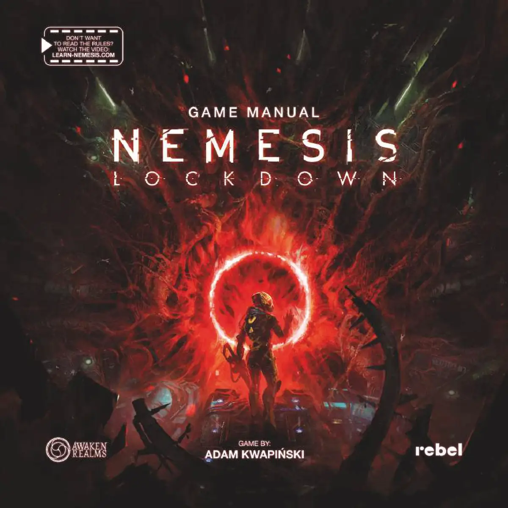
📝 第 1 页 AI 机翻对照（点击展开）
主门
游戏开始时，位于掩体旁边的主门是关闭的。只要它保持关闭状态，就无法通过任何方式进入掩体。
主门在游戏过程中会在以下情况之一时打开：
当第一个角色死亡时。
通过在出口房间使用某些物品/行动。
自毁指示物被翻到红色面。
需要注意的是，一旦打开，主门无法再次关闭。
开门行动对主门没有任何影响！
漫游车
漫游车曾是设施工作人员在表面移动的方式。
现在它可以用来安全逃离设施。
游戏开始时，漫游车被放置在出口房间旁边。它可以在前面解释的"逃离设施"行动中使用。
如果漫游车已经被使用，可以通过电脑行动远程将其移回设施。也可以将其移离设施。
致所有研究设施主管
在最近的事件后，当电梯维护通知触发了对整个实验室的清除时，我们决定采用标准化的突发事件响应代码列表。以下代码为机密 - 不要与您的员工分享！
代码绿色 - 仅当您希望拯救设施的全部人员时使用。响应小组的指令将是安全疏散所有人。您将因不当使用此代码导致的信息泄露而承担责任。
代码黄色 - 用于限制犯罪细节的传播。响应小组将识别并消除掌握过多敏感信息的人员。
代码蓝色 - 用于仅拯救最忠诚的人员。响应小组将消灭所有人，除了那些在规定时间内提交了适当事件报告表的人员。
代码灰色 - 用于防止污染扩散到其他设施。轨道激光将摧毁所有从该设施运往任何目的地的CSS容器。
代码红色 - 在您的设施完全损失后使用。核弹头将摧毁设施，使所有样本和污染物蒸发。您的牺牲将被铭记。
应急预案
应急预案是公司在设施事件发生后处理角色的结果。作为胜利检查的第一步，将为所有玩家解决当前应急预案，有可能杀死其中一些玩家。
玩家在整个游戏过程中最好找出如何最好地保护自己免受应急预案程序的影响。为此，必须弄清其他玩家持有的应急预案以及中立池中的应急预案，并通过排除法推断出当前应急预案是什么。
关于应变措施的信息可以被交易、给予和撒谎。
重要：当前应变措施将保持秘密状态，直到游戏结束，在此之前不得查看其内容！
指示物
每位玩家各自的应变措施指示物上的信息可由该玩家随时秘密查看，但绝不能展示给其他玩家（就像目标一样）。您可以通过口头或其他方式交易此信息——应变措施参考卡可用于在两名玩家之间秘密地进行此交易。
注意：各种游戏效果——例如使用档案室行动——也可能允许您查看其他玩家的应变措施指示物。
提示：我们建议使用帮助卡来交易关于应变措施的信息。这样，信息可以在选定的玩家群体之间秘密交易。
更多关于检查应变措施的信息——参见下方的"获取信息"。
获取信息
除了当前应变措施外，其他应变措施可以通过各种游戏效果偷看。
您可以在物品行动、电脑行动和档案室行动中找到这些效果。
更多关于档案室和电脑行动的信息——参见房间表，第27页。
更多关于物品的信息——参见物品和物品，第25页。
使用电脑行动，您可以偷看与您在同一区域内的任何其他玩家的所有应变措施。
使用档案室和警报室行动，您可以偷看1个来自中立池的应变措施指示物并获得该应变措施指示物。
通过这种方式，通过排除法，玩家可以对当前应变措施做出有根据的猜测。
更多关于区域的信息——参见设施和区域，第16页。
角色死亡
当角色死亡时，他们所有的应变措施指示物都将返回到中立池。
警报程序
将时间指示物所在位置的数字除以2（向下取整）。将警报程序指示物放置在时间轨道的这个槽位上。当时间指示物离开包含警报程序指示物的槽位时，游戏立即结束。
激活警报室后，隔离室立即开放；将其板块翻到有房间行动的一面。从现在开始，角色可以把自己锁在那里，即使时间指示物不在时间轨道的任何白色槽位上。
更多关于隔离室的信息——参见房间表，第27页。
<<< 离开设施 >>>
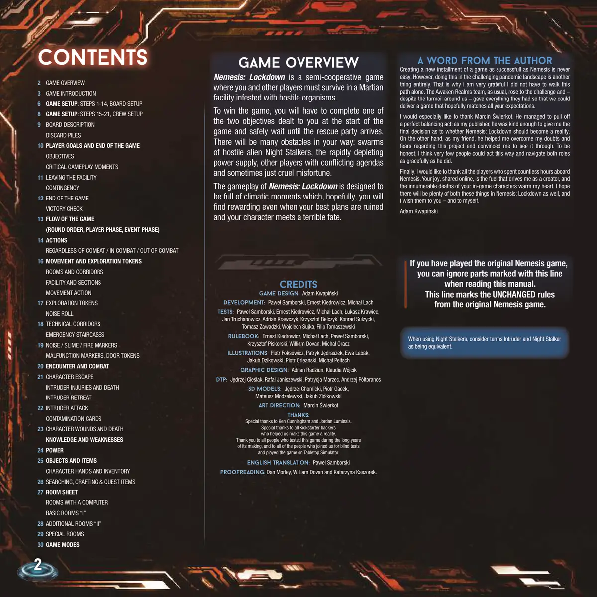
📝 第 2 页 AI 机翻对照（点击展开）
2 游戏概览
3 游戏介绍
6 游戏设置：步骤1-14，版图设置
8 游戏设置：步骤15-21，船员设置
9 版图描述
弃牌堆
10 玩家目标和游戏结束
目标
关键游戏时刻
11 离开设施
应急预案
12 游戏结束
胜利检查
13 游戏流程
##（轮次顺序，玩家阶段，事件阶段）
14 行动
无论是否处于战斗状态 / 处于战斗状态 / 不处于战斗状态
16 移动和探索指示物
房间和走廊
设施和区域
移动行动
17 探索指示物
噪音检定
18 技术走廊
紧急楼梯
19 噪音/粘液/火焰标记
故障标记，门指示物
20 遭遇和战斗
21 角色逃脱
入侵者伤害和死亡
入侵者撤退
22 入侵者攻击
污染卡牌
23 角色伤口和死亡
知识和弱点
24 能量
25 物体和物品
角色手牌和物品栏
26 搜索、制作和任务物品
27 房间表
带电脑的房间
基础房间"I"
28 额外房间"II"
29 特殊房间
30 游戏模式
游戏概览
《Nemesis: Lockdown》是一款半合作游戏，
你和其他玩家必须在一个充满敌对生物的
火星设施中生存。
要赢得游戏，你必须在游戏开始时
被分配的两个目标中完成一个，并安全等待
救援队的到来。
路上会有许多障碍：成群的敌对外星夜行者，
迅速耗尽的能源供应，
有冲突议程的其他玩家，
有时甚至是残酷的厄运。
《Nemesis: Lockdown》的游戏设计充满了
关键时刻，希望即使你的最佳计划被破坏，
你的角色遭遇可怕命运时，
你也会觉得这些时刻值得。
作者的话
创作一款像《Nemesis》一样成功的游戏续作
从来不容易。然而，在充满挑战的疫情环境下
做这件事完全是另一回事。这就是为什么我非常
感激我不必独自走这条路。Awaken Realms团队
一如既往地迎接挑战，并且——
尽管我们周围动荡不安——他们竭尽全力，
希望我们能交付一款符合你所有期望的游戏。
我特别要感谢Marcin Świerkot。他成功地
完成了完美的平衡：作为我的出版商，他
很友善地让我决定《Nemesis: Lockdown》
是否应该成为现实。
另一方面，作为我的朋友，他帮助我克服了
对这个项目的疑虑和恐惧，并说服我
完成它。说实话，我认为很少有人能
这样做并兼顾这两个角色。
正如他所做的那样优雅。
最后，我要感谢所有在《Nemesis》上花费无数时间的玩家。你们在线上分享的快乐，作为创作者的燃料，无数游戏中角色的死亡温暖了我的心。我希望在《Nemesis: Lockdown》中这两种东西都能有，我把它们送给你们——也送给我自己。
Adam Kwapiński
如果你玩过原版《Nemesis》游戏，
阅读本手册时可以忽略标记有此线的部分。
此线标记了与原版《Nemesis》游戏未改变的规则。
致谢
游戏设计： Adam Kwapiński
开发： Paweł Samborski, Ernest Kiedrowicz, Michał Lach
测试： Paweł Samborski, Ernest Kiedrowicz, Michał Lach, Łukasz Krawiec,
Jan Truchanowicz, Adrian Krawczyk, Krzysztof Belczyk, Konrad Sulżycki,
Tomasz Zawadzki, Wojciech Sujka, Filip Tomaszewski
规则书： Ernest Kiedrowicz, Michał Lach, Paweł Samborski,
Krzysztof Piskorski, William Dovan, Michał Oracz
插画： Piotr Foksowicz, Patryk Jędraszek, Ewa Labak,
Jakub Dzikowski, Piotr Orleański, Michał Peitsch
平面设计： Adrian Radziun, Klaudia Wójcik
排版： Jędrzej Cieślak, Rafał Janiszewski, Patrycja Marzec, Andrzej Półtoranos
3D模型： Jędrzej Chomicki, Piotr Gacek,
Mateusz Modzelewski, Jakub Ziółkowski
艺术指导： Marcin Świerkot
感谢：
特别感谢 Ken Cunningham 和 Jordan Luminais。
特别感谢所有 Kickstarter 赞助者，他们帮助我们实现了这款游戏。
感谢所有在游戏制作漫长岁月中测试这款游戏的人，感谢所有参加盲测并在 Tabletop Simulator 上玩游戏的人。
英文翻译： Paweł Samborski
校对： Dan Morley, William Dovan 和 Katarzyna Kaszorek.
目录
使用夜行者(Night Stalkers)时，请将入侵者(Intruder)和夜行者(Night Stalker)视为等同术语。
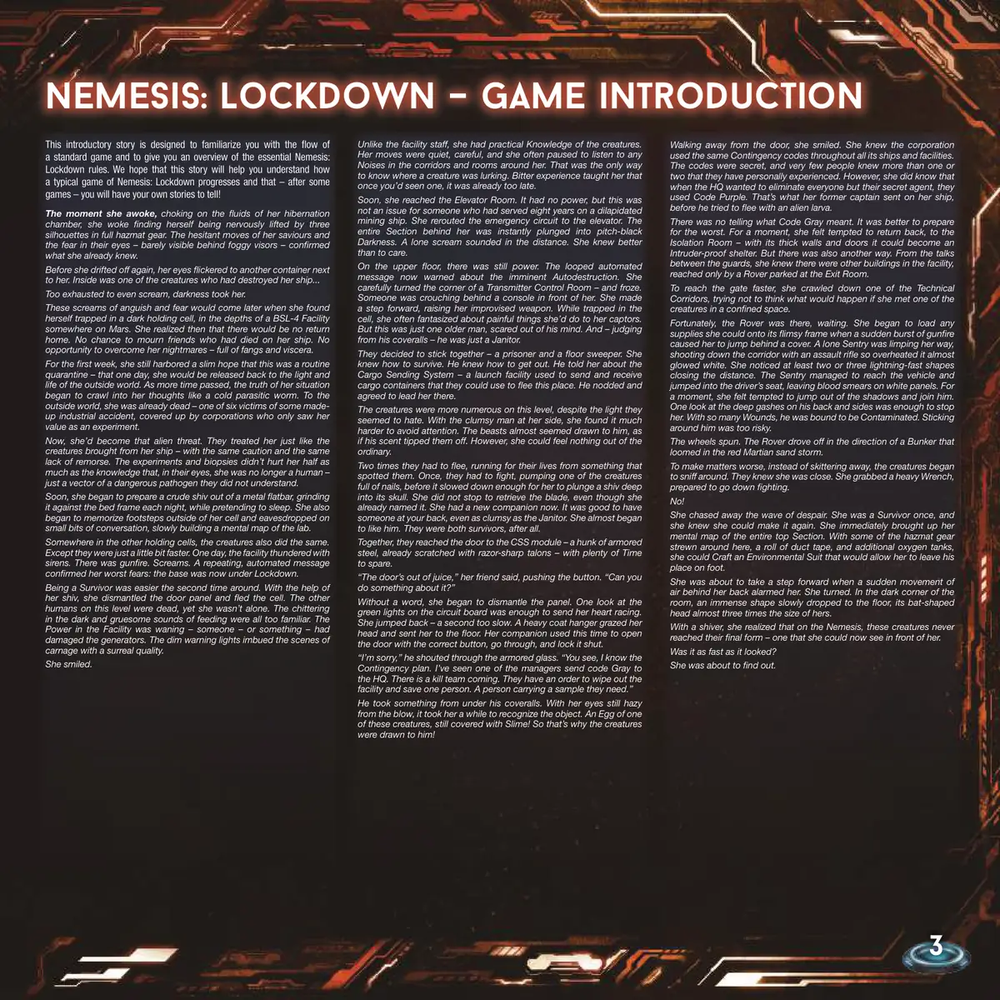
📝 第 3 页 AI 机翻对照（点击展开）
这篇引言故事旨在让你熟悉标准游戏的流程，并为你概述《Nemesis: Lockdown》（异形：封锁）的基本规则。我们希望这个故事能帮助你理解一场典型的《Nemesis: Lockdown》游戏是如何进行的，并且在经过几局游戏后，你也能拥有自己的故事可讲！
当她从休眠室的液体中呛醒时，发现自己正被三个穿着全套防护服的身影紧张地抬起。救世主们犹豫的动作和他们眼中几乎被模糊面罩遮掩的恐惧，证实了她已经知道的事实。
在她再次失去意识前，她的目光闪烁到她旁边的另一个容器里。里面有一个摧毁了她飞船的生物...
她甚至无力尖叫，黑暗便吞噬了她。
这些痛苦和恐惧的尖叫声在她发现自己被困在火星某处BSL-4设施的黑暗拘留室深处时才响起。她意识到，她将无法回家。没有机会哀悼在她飞船上死去的朋友。没有机会克服她那些充满尖牙和内脏的噩梦。
第一周，她仍抱有一丝微弱的希望，认为这只是常规隔离——总有一天，她会被释放回到外界的光明和生活中。随着时间流逝，她处境的真相开始像一条冰冷的寄生虫一样爬入她的思绪。对外界而言，她已经死了——是六名虚构工业事故的受害者之一，被那些只看到她作为实验价值的公司掩盖了真相。
现在，她成了那个外星威胁。他们对待她的方式就像对待她飞船带来的生物——同样的谨慎，同样的毫无怜悯。实验和活检带给她的痛苦远不及一个事实——在他们眼中，她不再是一个人，只是一个他们不理解的危险病原体载体。
很快，她开始用一块金属扁条制作一把粗糙的匕首，每晚在床架上磨它，同时假装睡觉。她还开始记忆牢房外的脚步声，偷听零星的对话，慢慢在脑海中构建出实验室的地图。在其他拘留室里的生物们也在做同样的事情。只是它们只是快了一点点。一天，警报声在设施中轰鸣。有枪声。尖叫声。一个重复的自动信息确认了她最 fears 的恐惧：基地现在处于封锁状态。
第二次当幸存者变得更容易了。借助她的匕首，她拆除了门板，逃离了牢房。这一层其他的人类都死了，但她并不孤单。黑暗中的吱吱声和可怕的进食声都太熟悉了。
设施中的电力正在减弱——有人——或有什么东西——损坏了发电机。昏暗的警告灯光为屠杀的场景赋予了超现实的质量。
她微笑着。
与设施工作人员不同，她对这些生物有实用的知识。她的行动安静而谨慎，她经常停下来倾听走廊和周围房间里的任何噪音。那是知道生物潜伏在哪里的唯一方法。痛苦的经历教会她，一旦你看到它们，就已经太晚了。
很快，她到达了电梯室。那里没有电力，但对于一个在破旧的采矿船上服役了八年的人来说，这不是问题。她重新路由了紧急电路到电梯。她身后的整个区域瞬间陷入一片漆黑。远处传来一声尖叫。她知道最好不要在意。
楼上仍有电力。循环播放的自动信息现在警告即将到来的自动毁灭。她小心地绕过发射器控制室的转角——然后僵住了。有人蹲在她面前控制台后面。她向前迈了一步，举起她临时制作的武器。被困在牢房里时，她常常幻想会对她的囚禁者做的痛苦事情。但这只是一个年迈的男人，吓得魂不附体。而且——从他的连体工作服判断——他只是一个清洁工。
他们决定待在一起——一个囚犯和一个地板清洁工。她知道如何生存。他知道如何逃脱。他告诉她货物发送系统——一个用于发送和接收货物发射设施，他们可以用它逃离这个地方。他点头同意带她去。
尽管这些生物似乎讨厌光线，但这一层的生物更多。身边有个笨拙的男人，她发现避免被注意要困难得多。野兽似乎被吸引到他身边，仿佛他的气味暴露了他们的行踪。然而，她感觉不到任何异常。
他们有两次不得不逃跑，为了躲避发现他们的东西而拼命奔跑。有一次，他们不得不战斗，将一颗生物钉满钉子，直到它速度减慢，她才能将一把匕首深深刺入它的头骨。她没有停下来取回刀刃，尽管她已经为它命名了。她现在有了一个新同伴。有个人在你身后是好事，即使是像清洁工这样笨拙的人。她几乎开始喜欢他了。毕竟，他们都是幸存者。
一起，他们到达了CSS模块的门——一块装甲钢板，已经被锋利的爪子抓伤——还有充足的时间。
"门没电了，"她的朋友说，按着按钮。"你能做点什么吗？"
她一言不发，开始拆卸面板。一眼看去
电路板上的绿灯足以让她的心跳加速。
她向后跳了一步——慢了一秒。一个沉重的衣架擦过她的
头部，将她击倒在地。她的同伴趁机用正确的按钮打开了门，
穿过门并将它锁上。
"对不起，"他透过防弹玻璃喊道，"你看，我知道应急计划。
我见过一名经理将代码灰发送到总部。有一支突击队正在赶来。
他们接到命令要清除整个设施并救出一个人。一个携带他们所需样本的人。"
他从连体工作服下取出什么东西。她的眼睛被击打后仍然模糊，
花了一段时间才认出那个物体。是这些生物中的一个卵，仍然
覆盖着粘液！所以这就是为什么这些生物会被他吸引！
她离开门口，微笑着。她知道公司在其所有船舶和设施中都使用相同的应急代码。
这些代码是秘密的，很少有人知道超过一两个他们亲身经历过的代码。然而，她确实知道，
当总部想要消除除其特工外的所有人时，他们使用代码紫。这就是她前船长在她的船上发送的代码，
在他试图带着外星幼虫逃跑之前。
无法判断代码灰意味着什么。最好为最坏的情况做准备。
有一刻，她 tempted to return back, to the Isolation Room – with its thick walls and doors it could become an Intruder-proof shelter. But there was also another way. From the talks between the guards, she knew there were other buildings in the facility, reached only by a Rover parked at the Exit Room.
为了更快到达大门，她沿着一条技术走廊爬行，尽量避免想如果她在有限空间里遇到其中一个生物会发生什么。
幸运的是，漫游车在那里等着。她开始将任何能找到的物资装上它脆弱的框架，突然一阵枪声让她跳到掩护物后面。一个孤独的哨兵一瘸一拐地向她走来，用一把几乎白热化的突击步枪沿着走廊射击。她注意到至少有两三个闪电般的身影正在靠近。哨兵设法到达车辆并跳到驾驶座上，在白色面板上留下了血迹。有一刻，她 tempted to jump out of the shadows and join him.
看了一眼他背部和侧面的深伤口，足以阻止她。有这么多伤口，他 bound to be Contaminated. Sticking around him was too risky.
车轮转动。漫游车驶向一个在红色火星沙尘中若隐若现的掩体。
更糟糕的是，这些生物没有爬开，而是开始四处嗅探。它们知道她就在附近。她抓起一把沉重的扳手，
准备好奋力一搏。
不！
她驱散了绝望的浪潮。她曾经是个幸存者，而且她知道自己可以再次做到。她立刻在脑海中勾勒出整个上层区域的完整地图。有了这里散落的一些危险防护装备、一卷胶带和额外的氧气罐，她可以制作一件环境防护服，这将使她能够步行离开这个地方。
她正要向前迈出一步，背后突然的一阵空气流动让她警觉起来。她转过身。在房间的黑暗角落，一个巨大的形状缓缓落到地板上，它蝙蝠状的头部几乎是她的三倍大。
一阵战栗中，她意识到在"复仇女神"号上，这些生物从未达到它们的最终形态——就是她现在眼前看到的这个形态。
它看起来有那么快吗？
她即将找到答案。
复仇女神：封锁——游戏介绍
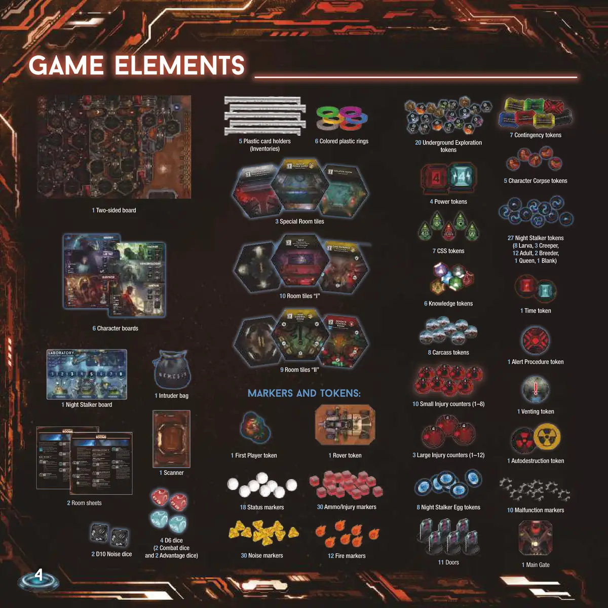
📝 第 4 页 AI 机翻对照（点击展开）
4个六面骰子
（2个战斗骰子和2个优势骰子）
游戏组件
1个扫描仪
要执行任何房间行动，角色必须在相应的房间内（除非他们拥有明确说明可以例外的特殊能力）。
当你处于战斗状态时，不能执行房间行动。
在有故障标记的房间中，不能执行房间行动。
带电脑的房间
有些房间有电脑符号，表示该房间有一台电脑。电脑符号使你可以执行电脑行动。
如果房间内有故障标记，则电脑不可用——就好像没有电脑符号一样。
更多关于电脑行动的信息——参见第15页。
基础房间"I"
所有10个基础房间，其背面标有数字"I"，每局游戏中都会出现。
档案室
检查档案
档案室
检查档案：
只有当你的知识指示物处于非激活状态时，才能执行此行动。
获得2点知识并将你的知识指示物翻到激活面。
然后，偷看任何应急指示物（即使在你所在区域之外）。
重要：记住你永远不能偷看激活的应急指示物。
更多关于知识指示物的信息——参见知识，第23页。
更多关于偷看应急指示物的信息——参见获取信息，第11页。
洞穴入口
穿过技术走廊
洞穴入口
穿过技术走廊：
你可以移动到所选的、有技术走廊入口的已探索房间。抽取并解决一张攻击牌（将其视为来自黑暗中成年入侵者的攻击）。
冷却系统
启动自毁序列
冷却系统
启动自毁序列：
拿取自毁指示物并将其放在时间轨道上前移3个槽位（时间指示物和自毁指示物之间应有2个空槽）。将其黄色面朝上放置。
注意：只要自毁指示物的黄色面可见，玩家就可以在发电机室停止该序列。
更多关于自毁的信息——参见第10页。
净化室
执行净化程序
净化室
执行净化程序：
扫描你手牌中的所有污染卡。
移除所有感染卡。如果你的角色版上有幼虫，则移除它。
如果你的角色版上有粘液标记，则弃掉它。
更多关于扫描污染卡的信息——参见第22页。
更多关于粘液的信息——参见第19页。
急救室
治疗你的伤口
急救室
治疗你的伤口：
包扎你所有的重伤，或者治疗1个你已包扎的重伤，或者治疗你所有的轻伤。
更多关于包扎和治疗伤口的信息——参见第23页。
实验室
分析1个物品
实验室
分析1个物品：
只有当以下物品之一在房间内时（例如由角色携带），才能执行此行动：入侵者尸体、角色尸体或蛋。
获得3点知识。
实验室
在研究后，目标被放置在实验室版图上的第一个空位。然后，发现目标下方的入侵者弱点卡。
如果目标先前曾被用来发现弱点，则将其弃置，而不是放置在实验室版图上。
关于目标和入侵者弱点卡更多信息——见弱点，第23页。
货物
发送系统 A
进入CSS舱 A
货物发送系统 A
进入CSS舱：
只有当时间指示物与任何CSS指示物在同一格，且CSS舱区域"A"为空时，你才能使用此行动。
进入后，你弃置所有牌并自动跳过。将你的角色放置在版图上对应的CSS舱区域。在事件阶段，你的角色将有机会使用此CSS舱逃脱。
CSS舱区域中的角色不受任何游戏效果影响，除非另有说明。
如果你的角色未能使用CSS舱逃脱，他们将受到1点重伤。
关于货物发送系统和CSS舱更多信息——见离开设施，第11页。
巢穴
探索此房间的角色，获得1点知识。
取一个蛋
巢穴
探索此房间的角色，获得1点知识。这是一次性效果。
取一个蛋：
从入侵者版图上取1个蛋指示物。
之后，执行一次噪音投掷。
放置在实验室版图上的蛋指示物代表巢穴中的蛋。当你从巢穴中取走（或摧毁）蛋时，从实验室版图上取走它们。
当巢穴中不再有蛋（它们全部被带走或摧毁）时，巢穴被视为被摧毁——在巢穴中放置1个伤害标记来表示这一点。
如果包含未带走蛋的房间中有火灾标记，则在事件阶段的火灾伤害步骤中摧毁1个未带走的蛋。
malfunction 标记永远不能放置在巢穴中。
关于火灾更多信息——见第19页。
注意：记住蛋是重物——见目标和物品，第25页。
注意：你不能在此房间执行任何搜索行动。
房间
<<< 房间卡 >>>
摧毁蛋：
每当你的角色在任何包含未带走蛋（未被任何角色携带）的房间中时，你可以尝试摧毁这些蛋。
解决此行动就像执行射击行动或近战攻击行动。每种伤害（任何类型）摧毁1个蛋。
对于这些行动，你不必满足角色"处于战斗中"的要求。
在近战攻击行动的情况下，如果角色未命中，他们不会抽取污染卡或受到伤害。
每次尝试摧毁蛋后，你必须执行一次噪音投掷。
关于噪音投掷更多信息——见第17页。
发电机
停止自毁序列
或
为区域供电
发电机
停止自毁序列：
如果时间轨道上有黄色面朝上的自毁指示物，则弃置它。
更多关于自毁机制 – 参见第10页。
或者
为区域供电：
翻转你所在区域的能量指示物。即使能量未恢复（即时间指示物处于非激活面），这也可以用来获得更多能量。
更多关于能量 – 参见第24页。
发射器
控制室
发送信号
或者
检查目标
发射器 控制室
发送信号：
在你的角色版图上信号空间放置一个状态标记。
注意：发送信号是某些目标的条件，也是某些应急情况的条件。
或者
检查目标：
选择一个角色版图信号空间上有状态标记的角色。
他们必须秘密向你展示他们的目标。
注意：如果所选玩家有多个目标，他们需要向你展示所有目标。
额外房间 "II"
每局游戏中，只使用从9个可用房间中随机选出的6个额外房间。这些房间背面标有"II"字样。
货物发送系统B
进入CSS舱B
货物发送系统B
如货物发送系统A所述，但适用于CSS B。
货物发送系统C
进入CSS舱C
货物发送系统C
如货物发送系统A所述，但适用于CSS C。
CSS控制室
调度CSS
CSS控制系统
调度CSS
查看选定的CSS指示物。你可以在时间轨道上将其向任意方向移动一格（即使那里没有CSS指示物槽位）。
你不能移动与时间指示物在同一槽位的CSS指示物。
你不能将CSS指示物移动到有另一个CSS指示物的槽位。
防御控制室
消灭威胁
防御控制室
消灭威胁：
将物品计数器减1或在此房间放置一个故障标记。选择一个没有故障标记且有入侵者的房间。在该房间放置一个故障标记。
该房间内所有入侵者受到1点伤害，该房间内每个角色受到1点重伤。
警卫室
获取装备
警卫室
获取装备：
将物品计数器减1并获得电击枪手工艺品或环境适应服手工艺品。
污染室
搜索时获得粘液
污染室
搜索时获得粘液：
每当你在该房间使用搜索行动时，获得一个粘液标记。
故障标记永远不能放置在污染室。
更多关于粘液 – 参见第19页。
手术室
执行手术程序
手术室
执行手术程序：
扫描所有污染卡（从你的行动牌库、手牌和弃牌堆中）。移除所有感染卡。如果你的角色版图上有幼虫，将其移除。扫描后，你的角色受到1点轻伤，你自动通过。洗混你所有的行动牌（包括手牌和弃牌堆中的牌）并将它们放入你的行动牌库。
注意：手术后你总是跳过你的回合。
并且你的手牌直到下一轮开始前都是空的。
关于扫描污染卡牌的更多信息——参见第22页。
测试实验室
知识4：
获取中和剂
测试实验室
知识4：
获取中和剂：
如果你的角色至少有4点知识，
获取中和剂手工艺品。
通风口
控制室
排出通风口
排出通风口：
选择一个有技术走廊入口的房间。
与你选择的房间相连的走廊必须不包含任何被摧毁的门。
关闭与你选择的房间相连的每个走廊中的门。
从该房间移除一个火灾标记（如果有），并将通风指示物放置在那里，以表示活动的紧急排出通风。
如果在当前玩家阶段结束前，与该房间相连的任何走廊中的门被打开或被摧毁，立即移除此指示物。
如果指示物在当前玩家阶段结束时（所有玩家都已通过后）仍然留在该房间内，该房间内的所有东西立即死亡（角色和入侵者均如此）。然后，弃置此指示物。
房间
<<< 房间表 >>>
2张房间表
1张夜行者版图
1个入侵者袋
2个D10噪音骰子
实验室
研究对象：夜行者
巢穴
已分析
对象
弱点
弱点
弱点
已分析
对象
繁殖者
爬行者
幼虫
女王
成虫
1张双面版图
6张角色版图
标记和指示物：
6个彩色塑料环
5个塑料卡牌架
（库存）
20个地下探索指示物
4个能量指示物
7个CSS指示物
6个知识指示物
8个尸体指示物
10个小伤害计数器（1-8）
3个大伤害计数器（1-12）
8个夜行者卵指示物
11个门
30个弹药/伤害标记
12个火灾标记
7个应急指示物
5个角色尸体指示物
27个夜行者指示物
（8个幼虫，3个爬行者，
12个成虫，2个繁殖者，
1个女王，1个空白）
1个时间指示物
1个警报程序指示物
1个通风指示物
1个自毁指示物
10个故障标记
1个主门
1个起始玩家指示物
1个漫游者指示物
18个状态标记
30个噪音标记
仓库
设施工人从这里开始
制作装备
隔离室
将自己锁起来
备用
电源
恢复电力
3个特殊房间板块
洞穴入口
穿过技术走廊
巢穴
探索此房间的角色，
获得1点知识。
获取一个卵
10个"I"型房间板块
防御
控制室
消灭威胁
通风口
控制室
排出通风口
9个"II"型房间板块
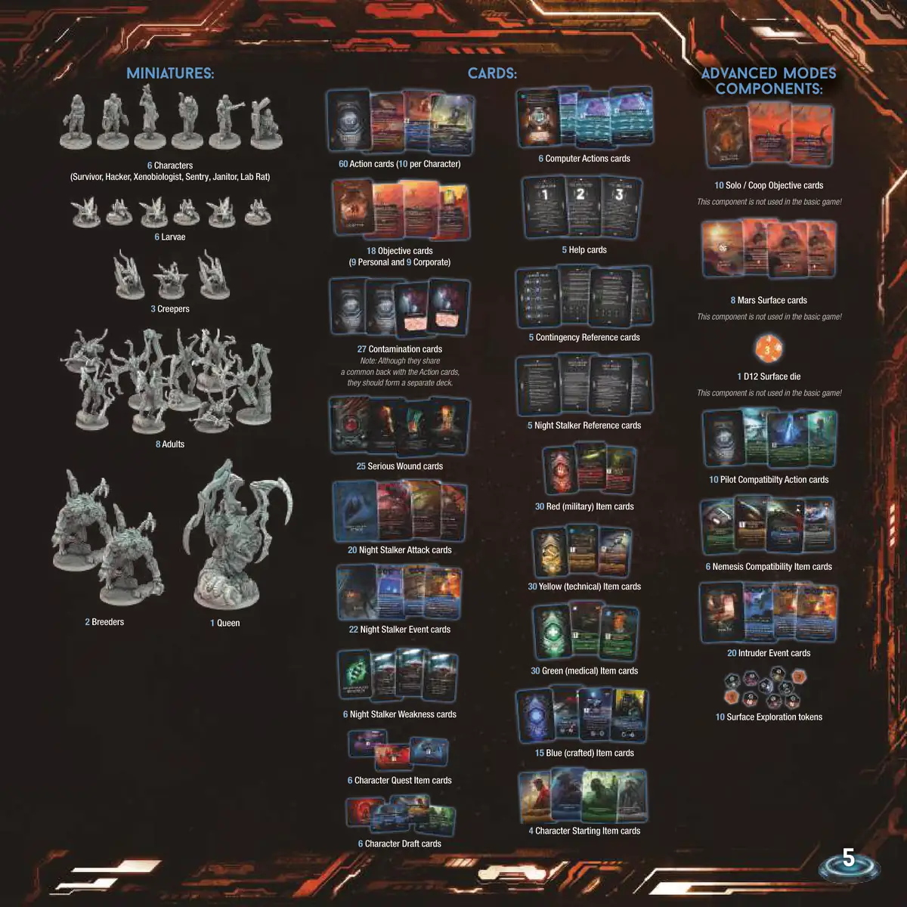
📝 第 5 页 AI 机翻对照（点击展开）
60张行动卡牌（每个角色10张）
18张目标卡牌
（9张个人目标和9张公司目标）
27张污染卡牌
注意：尽管它们与行动卡牌共享
背面，但应组成一个独立的牌库。
25张重伤卡牌
20夜行猎手攻击卡牌
22夜行猎手事件卡牌
6张夜行猎手弱点卡牌
6张角色任务物品卡牌
6张角色选择卡牌
6张电脑行动卡牌
5张协助卡牌
5张应急参考卡牌
5张夜行猎手参考卡牌
30张红色（军事）物品卡牌
30张黄色（技术）物品卡牌
30张绿色（医疗）物品卡牌
15张蓝色（手工）物品卡牌
4张角色起始物品卡牌
高级模式组件：
10张单人/合作目标卡牌
此组件在基础游戏中不使用！
8张火星地表卡牌
此组件在基础游戏中不使用！
1个D12地表骰子
此组件在基础游戏中不使用！
10张飞行员兼容性行动卡牌
6张宿敌兼容性物品卡牌
20张入侵者事件卡牌
10张地表探索指示物
卡牌：
人偶：
6个角色
（幸存者、黑客、外生物学家、哨兵、清洁工、实验室老鼠）
6只幼虫
3只爬行者
8只成体
2只繁殖者
1只蜂后
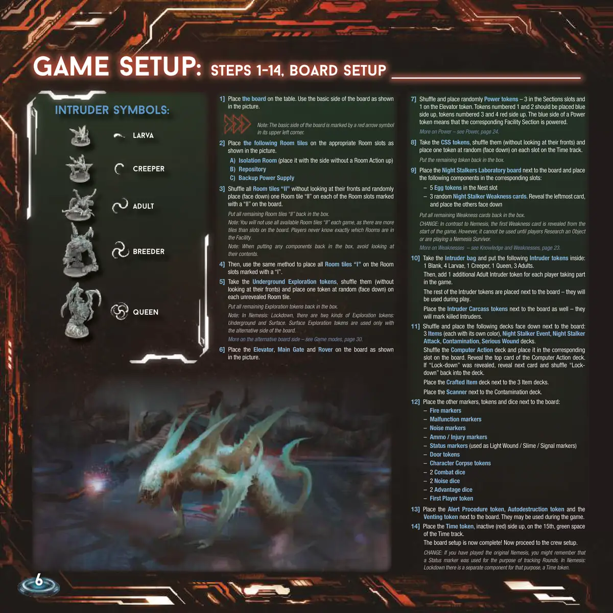
📝 第 6 页 AI 机翻对照（点击展开）
游戏设置：步骤1-14，版图设置
1] 将版图放在桌上。使用版图的基础面，如图所示。
注意：版图的基础面在其左上角有一个红色箭头符号标记。
2] 按照图片所示，将下列板块放置在相应的板块槽位中。
A) 隔离室（将其没有板块行动的一面朝上放置）
B) 仓库
C) 备用电源
3] 洗混所有"II"号板块，不要看正面，然后随机将一块"II"号板块（面朝下）放置在版图上标记有"II"的每个板块槽位上。
将剩余的"II"号板块放回盒中。
注意：由于板块数量多于版图上的槽位，每局游戏不会使用所有可用的"II"号板块。玩家永远不会确切知道设施中有哪些房间。
注意：将任何组件放回盒中时，避免查看其内容。
4] 然后，使用相同的方法将所有"I"号板块放置在标记有"I"的板块槽位上。
5] 拿出地下探索指示物，洗混它们（不要看正面），然后随机将一个指示物（面朝下）放在每个未揭示的板块上。
将剩余的探索指示物放回盒中。
注意：《Nemesis: Lockdown》中有两种探索指示物：地下和地表。地表探索指示物仅与版图的替代面一起使用。
关于替代版图面更多信息——参见游戏模式，第30页。
6] 按照图片所示，将电梯、主门和漫游者放置在版图上。
7] 洗混并随机放置能量指示物——3个在区域槽位中，1个在电梯指示物上。编号为1和2的指示物应蓝色面朝上，编号为3和4的指示物应红色面朝上。能量指示物的蓝色面表示相应的设施区域已通电。
关于能量更多信息——参见能量，第24页。
8] 拿出CSS指示物，洗混它们（不要看正面），然后随机将一个指示物（面朝下）放在时间轨道上的每个槽位上。
将剩余的指示物放回盒中。
9] 将夜行者实验室版图放在主版图旁边，并将以下组件放入相应的槽位中：
- 5个卵指示物在巢穴槽位中
- 3张随机的夜行者弱点卡。揭示最左边的一张，其他面朝下放置
将剩余的弱点卡放回盒中。
变更：与《Nemesis》不同，第一张弱点卡从游戏开始就揭示。但是，直到玩家研究一个物体或正在扮演Nemesis幸存者时才能使用它。
关于弱点更多信息——参见知识和弱点，第23页。
10] 拿出入侵者袋，并将以下入侵者指示物放入其中：
1个空白，4个幼虫，1个爬行者，1个女王，3个成体。
然后，为参与游戏的每位玩家各添加1个额外的成年入侵者指示物。
其余的入侵者指示物放置在版图旁边——它们将在游戏过程中使用。
将入侵者尸体指示物也放置在版图旁边——它们将标记被杀死的入侵者。
11] 洗牌并将以下牌库面朝下放置在版图旁边：
3个物品牌（每个都有其自己的颜色）、夜潜者事件牌、夜潜者攻击牌、污染牌、重伤牌。
洗牌计算机行动牌并将其放置在版图上对应的槽位中。翻开计算机行动牌库顶部的牌。
如果翻出"封锁"，则翻开下一张牌并将"封锁"洗回牌库中。
将自制物品牌库放置在3个物品牌库旁边。
将扫描仪放置在污染牌库旁边。
12] 将其他指示物、标记和骰子放置在版图旁边：
– 火灾标记
– 故障标记
– 噪音标记
– 弹药/伤害标记
– 状态标记（用作轻伤/粘液/信号标记）
– 门标记
– 角色尸体标记
– 2个战斗骰子
– 2个噪音骰子
– 2个优势骰子
– 先行者标记
13] 将警报程序标记、自毁标记和通风标记放置在版图旁边。它们可能在游戏过程中使用。
14] 将时间标记放置在时间轨道的第15个绿色格子上，不活跃（红色）面朝上。
版图设置现在完成！现在继续进行船员设置。
变更：如果您玩过原版《Nemesis》，您可能记得曾经使用一个状态标记来追踪轮次。在《Nemesis: Lockdown》中，有一个单独的组件用于此目的，即时间标记。
入侵者符号：
幼虫
爬行者
成年
繁殖者
皇后
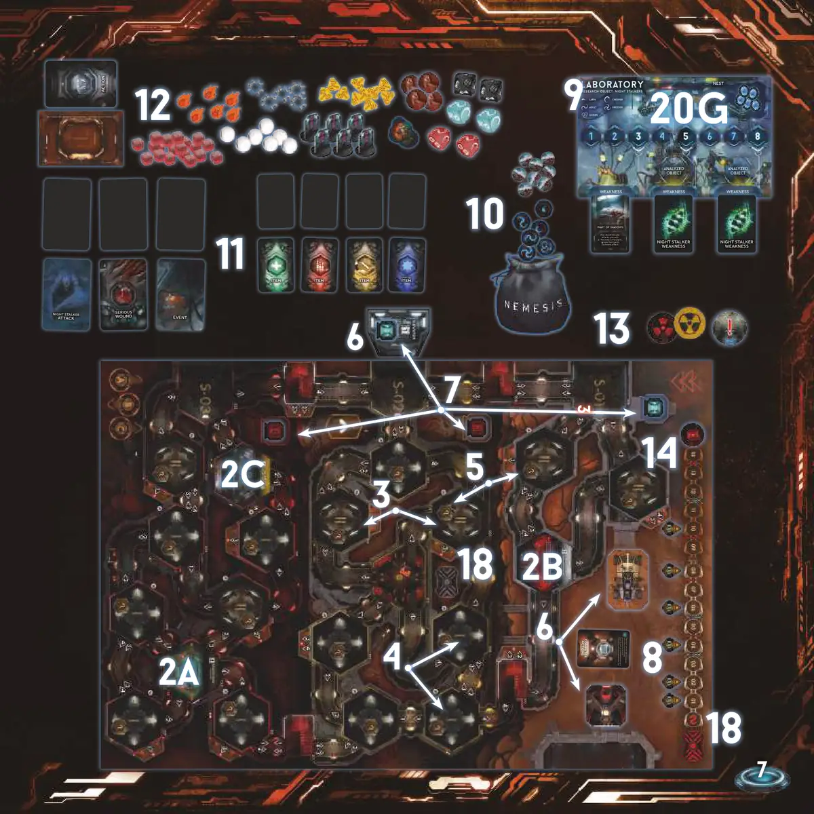
📝 第 7 页 AI 机翻对照（点击展开）
实验室
研究对象：夜行者（Night Stalkers）
巢穴（NEST）
已分析
目标
弱点
弱点
弱点
已分析
目标
繁殖者（breeder）
爬行者（creeper）
幼虫（larva）
女王（queen）
成虫（adult）
物品（ITEM）
严重（SERIOUS）
伤口（WOUND）
事件（EVENT）
夜行者（NIGHT STALKER）
攻击（ATTACK）
行动（ACTION）
物品（ITEM）
物品（ITEM）
制作（CRAFTED）
物品（ITEM）
谨慎阴影（Wary of Shadows）
如果成虫入侵者（Adult Intruder）用"潜伏于黑暗"（Perched in the Dark）攻击你，忽略该卡牌的黑暗效果。
夜行者（NIGHT STALKER）
弱点（WEAKNESS）
夜行者（NIGHT STALKER）
弱点（WEAKNESS）
电脑（COMPUTER）
行动（ACTIONS）
如果你在有电脑的房间（Room）且有电的区域（Section）中，选择并执行1张正面朝上的电脑行动卡（Computer Action card）上的行动。弃置该卡牌并翻开另一张。
2c
2a
2B
20G
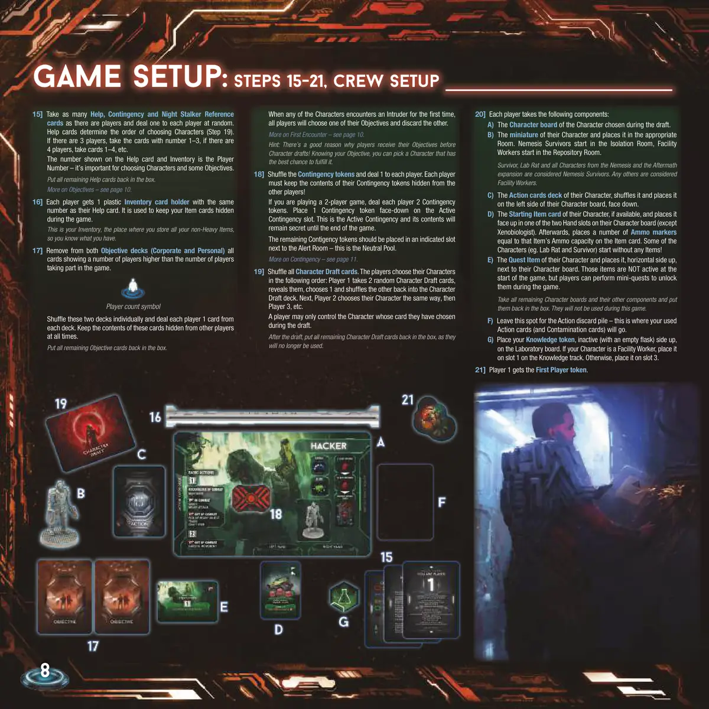
📝 第 8 页 AI 机翻对照（点击展开）
15] 取与玩家数量相同的帮助卡、应急卡和夜行者参考卡，随机发给每位玩家一张。
帮助卡决定选择角色的顺序（步骤19）。
如果有3名玩家，取编号为1-3的卡片；如果有4名玩家，取编号为1-4的卡片，以此类推。
帮助卡和装备卡上显示的数字是玩家编号——这对选择角色和某些目标很重要。
将剩余的所有帮助卡放回盒中。
关于目标的更多信息——参见第10页。
16] 每位玩家获得1个与他们的帮助卡编号相同的塑料装备卡卡套。用于在游戏过程中隐藏你的物品卡。
这是你的装备，你存放所有非重型物品的地方，这样你就知道自己拥有什么。
17] 从两个目标牌组（公司和个人）中移除所有显示玩家数量高于实际参与游戏玩家数量的卡片。
玩家数量符号
分别洗这两个牌组，并给每位玩家每个牌组发1张卡片。始终将这些卡片的内容对其他玩家保密。
将剩余的目标牌放回盒中。
当任何角色第一次遭遇入侵者时，所有玩家将选择一个目标并弃掉另一个。
关于首次遭遇的更多信息——参见第10页。
提示：玩家在角色选秀前获得他们的目标是有充分理由的！了解你的目标，你可以选择最有机会完成它的角色。
18] 洗混应急指示物，发给每位玩家1个。每位玩家必须将他们的应急指示物内容对其他玩家保密！
如果你进行的是2人游戏，给每位玩家发2个应急指示物。将1个应急指示物面朝下放在活跃应急槽位。这是活跃应急，其内容将保持秘密直到游戏结束。
剩余的应急指示物应放在警报室旁边的指定槽位——这是中立池。
关于应急的更多信息——参见第11页。
19] 洗混所有角色选秀牌。玩家按以下顺序选择他们的角色：玩家1抽取2张随机角色选秀牌，展示它们，选择1张，并将另一张洗回角色选秀牌库。接下来，玩家2以同样的方式选择他们的角色，然后是玩家3，以此类推。
玩家只能控制他们在选秀中选择的角色的卡片。
选秀后，将剩余的所有角色选秀牌放回盒中，因为它们将不再使用。
20] 每位玩家取以下组件：
A) 他们在选秀中选择的角色版图。
B) 他们角色的迷你模型，并将其放置在适当的位置
游戏设置：步骤15-21，船员设置
幸存者从隔离室(Isolation Room)开始，设施工作人员从仓库室(Repository Room)开始。
《Nemesis》和《Aftermath》扩展中的幸存者(Lab Rat)和所有角色被视为Nemesis幸存者。其他所有角色被视为设施工作人员。
C) 他们角色的行动牌库(Action cards deck)，洗牌后将其放在角色版图左侧，牌面朝下。
D) 他们角色的起始物品卡(Starting Item card)，如果有的话，并将其正面朝上放在角色版图的两个手牌位(Hand slots)之一中(除Xenobiologist外)。之后，在物品卡上放置等于该物品弹药容量(Ammo capacity)数量的弹药指示物(Ammo markers)。有些角色(例如Lab Rat和Survivor)开始时没有任何物品！
E) 他们角色的任务物品卡(Quest Item)，并将其水平朝上放在角色版图旁边。这些物品在游戏开始时不处于激活状态，但玩家可以在游戏过程中执行小任务(mini-quests)来解锁它们。
将所有剩余的角色版图和其他组件放回盒中。它们在本游戏中不会使用。
F) 为行动弃牌堆(Action discard pile)留出这个位置——你使用过的行动牌(和污染卡 Contamination cards)将放在这里。
G) 将你的知识指示物(Knowledge token)不激活的一面(空烧瓶一侧)朝上放在实验室版图(Laboratory board)上。如果你的角色是设施工作人员(Facility Worker)，将其放在知识轨道(Knowledge track)的1号位上。否则，放在3号位上。
21] 玩家1获得起始玩家标记(First Player token)。
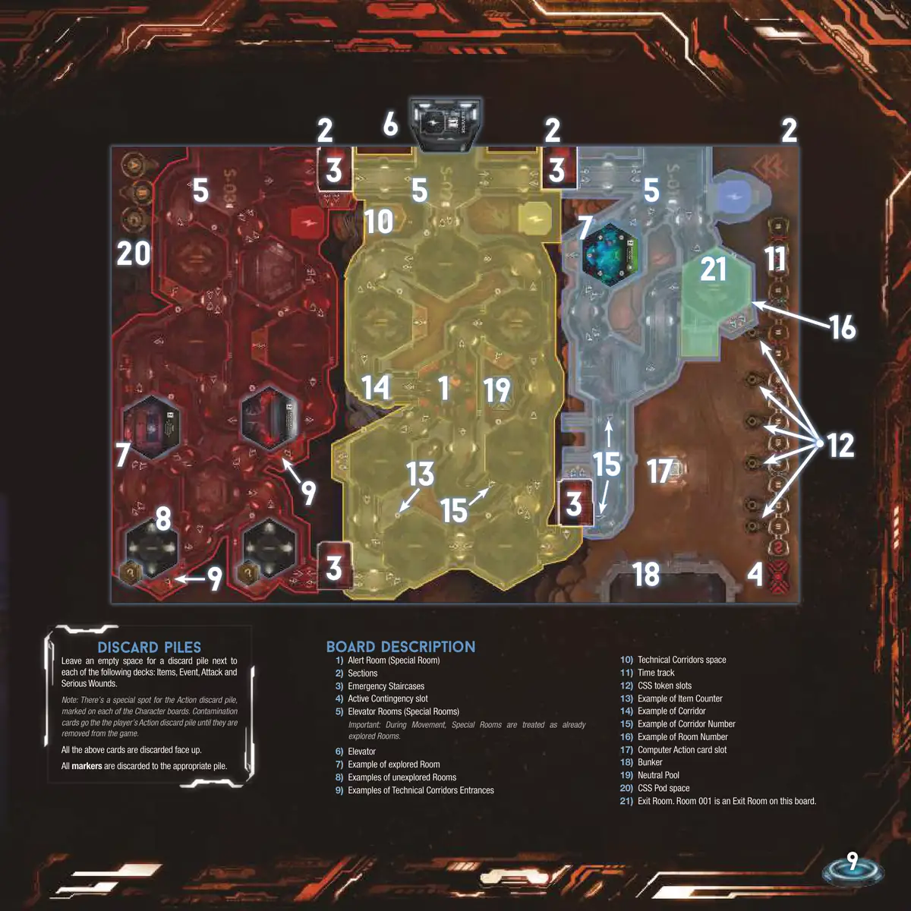
📝 第 9 页 AI 机翻对照（点击展开）
紧急
室
治疗你的伤口
仓库
设施工人从这里开始
制作装备
巢穴
探索此房间的角色，
获得1点知识。
拿取一个蛋
版图描述
- 警戒室（特殊房间）
2) 区域
3) 紧急楼梯
4) 激活应急槽位
- 电梯室（特殊房间）
重要：在移动过程中，特殊房间被视为已探索的房间。
6) 电梯
7) 已探索房间示例
8) 未探索房间示例
9) 技术走廊入口示例
弃牌堆
在以下牌库旁边留出一个空位作为弃牌堆：物品、事件、攻击和重伤牌堆。
注意：有一个特殊位置用于行动弃牌堆，标记在每个角色版图上。污染牌进入玩家的行动弃牌堆，直到它们被从游戏中移除。
所有上述牌都是正面朝上弃置。
所有指示物都被弃置到相应的牌堆中。
10) 技术走廊区域
11) 时间轨道
12) CSS指示物槽位
13) 物品指示物示例
14) 走廊示例
15) 走廊编号示例
16) 房间编号示例
17) 行动卡牌槽位（计算机）
18) 地堡
19) 中立池
- 胶囊舱区域
- 出口室。001室是此版图上的一个出口室。
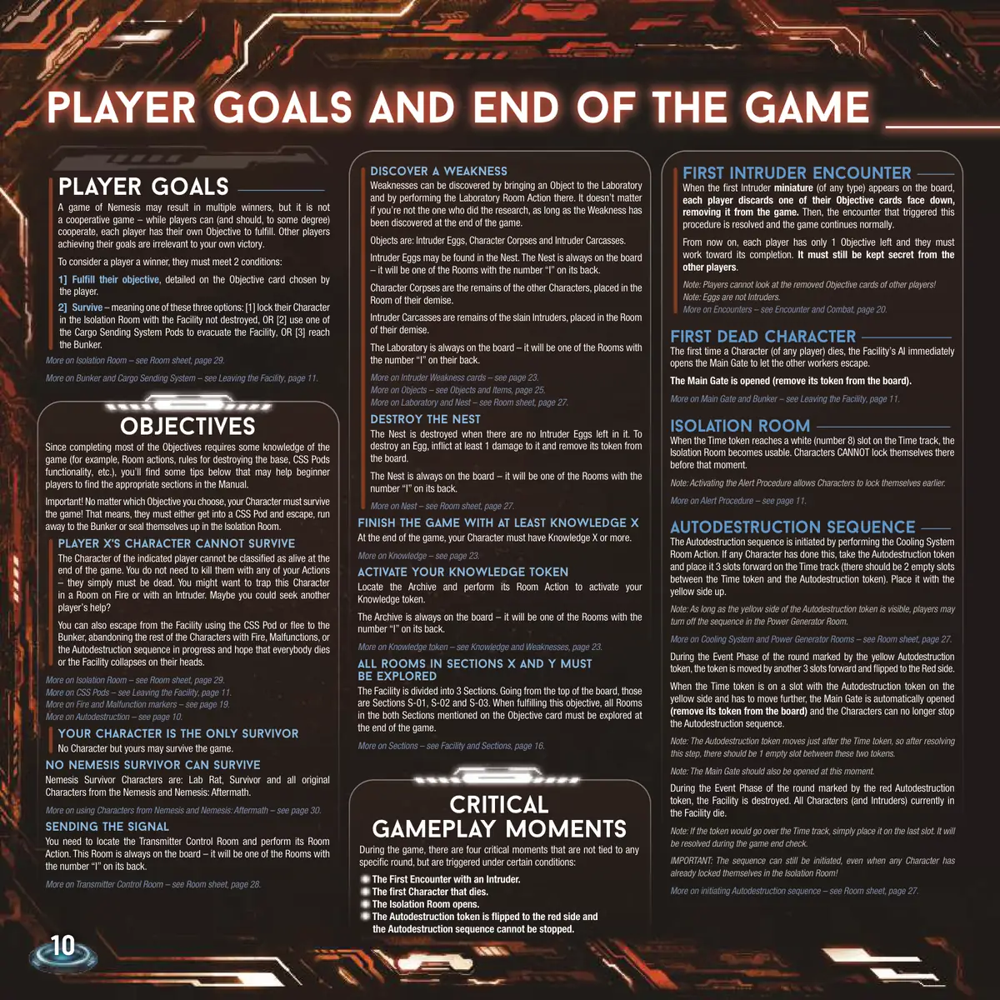
📝 第 10 页 AI 机翻对照（点击展开）
玩家目标与游戏结束
玩家目标
一场《Nemesis》游戏可能有多个获胜者，但这不是一款合作游戏——虽然玩家可以（并且在一定程度上应该）合作，但每位玩家都有自己的目标需要完成。其他玩家达成他们的目标与你自己的胜利无关。
要认为一位玩家是获胜者，他们必须满足2个条件：
1] 完成他们的目标，该目标详细记录在玩家选择的目标卡上。
2] 幸存——这意味着以下三个选项之一：[1] 将其角色隔离在隔离室，且设施未被摧毁，或者 [2] 使用其中一个货物发送系统舱撤离设施，或者 [3] 到达掩体。
关于隔离室的更多信息——见房间表，第29页。
关于掩体和货物发送系统的更多信息——见离开设施，第11页。
目标
由于完成大多数目标需要一些游戏知识（例如，房间行动、摧毁基地的规则、货物发送系统舱功能等），您在下面会发现一些提示，这些提示可能有助于新手玩家在手册中找到相应章节。
重要！无论您选择哪个目标，您的角色必须在游戏中幸存！这意味着，他们必须要么进入货物发送系统舱并逃脱，要么跑到掩体，要么将自己隔离在隔离室。
玩家X的角色无法幸存
指定玩家的角色在游戏结束时不能被归类为存活状态。您不需要用任何行动杀死他们——他们只需要死亡。您可能想将这个角色困在有火的房间或有入侵者的房间里。也许您可以寻求另一位玩家的帮助？
您也可以使用货物发送系统舱逃离设施，或者逃到掩体，抛弃其他角色，任由他们被火灾、故障或正在进行的自毁序列消灭，并希望所有人都死亡或设施倒塌在他们头上。
关于隔离室的更多信息——见房间表，第29页。
关于货物发送系统舱的更多信息——见离开设施，第11页。
关于火灾和故障标记的更多信息——见第19页。
关于自毁的更多信息——见第10页。
你的角色是唯一的幸存者
除了你的角色，任何其他角色都不能在游戏中幸存。
没有Nemesis幸存者能够幸存
Nemesis幸存者角色是：实验室大鼠、幸存者以及《Nemesis》和《Nemesis:余波》中的所有原始角色。
关于使用《Nemesis》和《Nemesis:余波》中的角色的更多信息——见第30页。
发送信号
您需要找到发射器控制室并执行其房间行动。这个房间总是在版图上——它将是背面标有数字"I"的房间之一。
关于发射器控制室的更多信息——见房间表，第28页。
发现弱点
可以通过将物品带到实验室来发现弱点
并在那里执行实验室房间行动。无论你是否进行了研究都没有关系，只要在游戏结束时弱点已被发现即可。
物品有：入侵者卵、角色尸体和入侵者残骸。入侵者卵可以在巢穴中发现。巢穴总是在版图上——它将是背面标有数字"I"的房间之一。角色尸体是其他角色的遗骸，放置在他们死亡的房间中。入侵者残骸是被杀死的入侵者的遗骸，放置在他们死亡的房间中。实验室总是在版图上——它将是背面标有数字"I"的房间之一。
更多关于入侵者弱点卡牌——参见第23页。
更多关于物品——参见物品与道具，第25页。
更多关于实验室和巢穴——参见房间卡，第27页。
摧毁巢穴
当巢穴中没有入侵者卵时，巢穴就被摧毁了。要摧毁一个卵，需对其造成至少1点伤害并将其指示物从版图上移除。巢穴总是在版图上——它将是背面标有数字"I"的房间之一。更多关于巢穴——参见房间卡，第27页。
以至少知识X完成游戏
在游戏结束时，你的角色必须拥有知识X或更多。更多关于知识——参见第23页。
激活你的知识指示物
找到档案馆并执行其房间行动以激活你的知识指示物。档案馆总是在版图上——它将是背面标有数字"I"的房间之一。更多关于知识指示物——参见知识与弱点，第23页。
X区和Y区的所有房间都必须被探索
设施被分为3个区。从版图顶部开始，分别是S-01区、S-02区和S-03区。在完成此目标时，目标卡上提到的两个区中的所有房间必须在游戏结束时被探索。更多关于区——参见设施与区，第16页。
关键游戏时刻
在游戏中，有四个关键时刻不与任何特定轮次绑定，而是在特定条件下触发：
与入侵者的第一次遭遇。
第一个角色死亡。
隔离室开启。
自毁指示物翻到红色面，且自毁序列无法停止。
第一次入侵者遭遇
当第一个入侵者模型（任何类型）出现在版图上时，每位玩家弃置一张自己的目标牌面朝下，将其从游戏中移除。然后，触发此程序的遭遇被解决，游戏正常继续。从现在起，每位玩家只剩下1个目标，他们必须努力完成它。它仍必须对其他玩家保密。
注意：玩家不能查看其他玩家被移除的目标牌！
注意：卵不是入侵者。
<!--page:N-->
关于遭遇战 – 参见遭遇战与战斗，第20页。
第一个死亡角色
当任意玩家的角色第一次死亡时，设施的AI会立即打开主大门，让其他工人逃脱。
主大门被打开（将其指示物从版图上移除）。
关于主大门和掩体 – 参见离开设施，第11页。
隔离室
当时针到达时间轨道上的白色（数字8）槽位时，隔离室变得可用。在此之前，角色不能将自己锁在隔离室内。
注意：启动警报程序允许角色更早将自己锁在隔离室内。
关于警报程序 – 参见第11页。
自毁序列
执行冷却系统房间的行动会启动自毁序列。如果有任何角色执行了此行动，拿取自毁指示物并将其向前移动3个槽位放置在时间轨道上（时针和自毁指示物之间应有2个空槽位）。将其黄色面朝上放置。
注意：只要自毁指示物的黄色面可见，玩家可以在发电机组房间关闭该序列。
关于冷却系统和发电机组房间 – 参见房间卡，第27页。
在黄色自毁指示物标记的回合的事件阶段，该指示物再向前移动3个槽位并翻转到红色面。
当时针位于黄色面朝上的自毁指示物所在的槽位且需要继续移动时，主大门会自动打开（将其指示物从版图上移除），角色无法再阻止自毁序列。
注意：自毁指示物在时针之后移动，因此在解决此步骤后，这两个指示物之间应有1个空槽位。
注意：此时也应打开主大门。
在红色自毁指示物标记的回合的事件阶段，设施被摧毁。当前在设施内的所有角色（和入侵者）死亡。
注意：如果指示物会超出时间轨道，只需将其放在最后一个槽位上。它将在游戏结束检查时被解决。
重要：即使任何角色已经将自己锁在隔离室内，序列仍可启动！
关于启动自毁序列 – 参见房间卡，第27页。
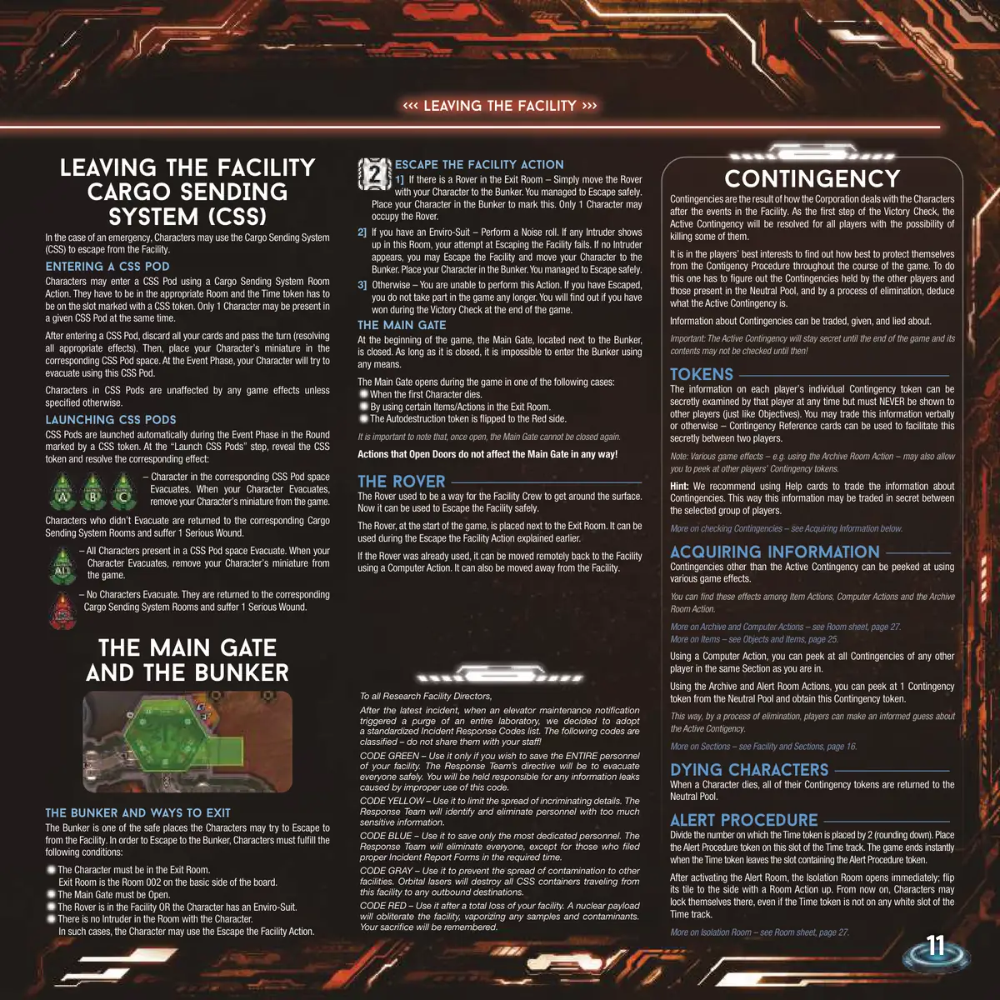
📝 第 11 页 AI 机翻对照（点击展开）
离开设施
货物发送系统
系统 (CSS)
在紧急情况下，角色可以使用货物发送系统(CSS)从设施中逃脱。
进入 CSS 舱
角色可以使用货物发送系统房间行动进入 CSS 舱。他们必须在相应的房间内，并且时间标记必须放在标有 CSS 标记的槽位上。同一时间，一个 CSS 舱内只能有 1 个角色。
进入 CSS 舱后，弃掉你所有的牌并结束回合（解决所有相应效果）。然后，将你的角色模型放在相应的 CSS 舱区域。在事件阶段，你的角色将尝试使用这个 CSS 舱撤离。
CSS 舱中的角色不受任何游戏效果的影响，除非另有说明。
发射 CSS 舱
CSS 舱在有 CSS 标记的轮次的事件阶段自动发射。在"发射 CSS 舱"步骤，揭示 CSS 标记并解决相应效果：
- 相应 CSS 舱区域中的角色撤离。当你的角色撤离时，将你的角色模型从游戏中移除。
未撤离的角色返回到相应的货物发送系统房间并受到 1 点重伤。
- 所有在 CSS 舱区域中的角色撤离。当你的角色撤离时，将你的角色模型从游戏中移除。
- 没有角色撤离。他们返回到相应的货物发送系统房间并受到 1 点重伤。
主门和掩体
掩体和出口方式
掩体是角色可以从设施尝试逃脱的安全地点之一。为了逃往掩体，角色必须满足以下条件：
角色必须在出口房间。
出口房间是版图基础面的 002 房间。
主门必须处于开启状态。
漫游者在设施内 OR 角色拥有环境服。
角色所在房间没有入侵者。
在这种情况下，角色可以使用逃离设施行动。
逃离设施行动
1] 如果出口房间内有漫游者 - 只需将漫游者与你的角色一起移动到掩体。你成功安全逃脱。将你的角色放在掩体上以标记这一点。只有 1 个角色可以占据漫游者。
2] 如果你拥有环境服 - 进行噪音检定。如果任何入侵者出现在这个房间，你逃离设施的尝试失败。如果没有入侵者出现，你可以逃离设施并将你的角色移动到掩体。将你的角色放在掩体上。你成功安全逃脱。
3] 否则 - 你无法执行此行动。如果你已经逃脱，你不再参与游戏。你将在游戏结束时的胜利检查中得知你是否获胜。
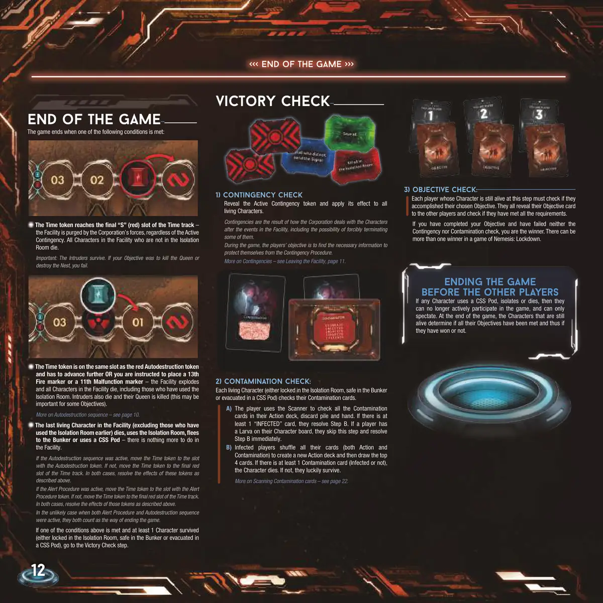
📝 第 12 页 AI 机翻对照（点击展开）
游戏结束
当满足以下任一条件时，游戏结束：
时间指示物到达时间轨道上最后的"S"（红色）格——设施被公司部队清除，无论激活的紧急情况如何。设施中所有不在隔离室中的角色死亡。
重要：入侵者存活。如果你的目标是杀死皇后或摧毁巢穴，你失败了。
时间指示物与红色自毁指示物在同一格且需要进一步前进，或者你被放置第13个火焰指示物或第11个故障指示物——设施爆炸，设施中所有角色死亡，包括使用过隔离室的角色。入侵者也死亡，他们的皇后被杀死（这可能对某些目标很重要）。
关于自毁序列的更多信息——参见第10页。
设施中最后一个存活的角色（不包括之前使用过隔离室的角色）死亡、使用隔离室、逃入掩体或使用CSS逃生舱——设施中已无事可做。
如果自毁序列已激活，将时间指示物移动到自毁指示物所在的格。如果没有，将时间指示物移动到时间轨道的最后红色格。在这两种情况下，都如上所述解决这些指示物的效果。
如果警报程序已激活，将时间指示物移动到警报程序指示物所在的格。如果没有，将时间指示物移动到时间轨道的最后红色格。在这两种情况下，都如上所述解决这些指示物的效果。
在警报程序和自毁序列同时激活的极少数情况下，两者都算作游戏结束的方式。
如果满足上述任一条件且至少有1个角色存活（被锁在隔离室中、在掩体中安全或通过CSS逃生舱撤离），进入胜利检查步骤。
胜利检查
1) 紧急情况检查
揭示激活的紧急情况指示物，并将其效果应用于所有存活的角色。
紧急情况是公司在处理设施中事件后对角色的处理结果，包括可能强制终止其中一些角色。
在游戏过程中，玩家的目标是找到必要的信息以保护自己免受紧急情况程序的影响。
关于紧急情况的更多信息——参见离开设施，第11页。
2) 污染检查：
每个存活的角色（被锁在隔离室中、在掩体中安全或通过CSS逃生舱撤离）检查他们的污染卡。
A) 玩家使用扫描仪检查他们行动牌库、弃牌堆和手牌中的所有污染卡。如果有至少1张"感染"卡，他们执行步骤B。如果玩家的角色板上有幼虫，他们跳过此步骤并执行
立即执行步骤 B。
B) 感染玩家洗混他们所有的卡牌（行动卡和污染卡）以创建一个新的行动牌库，然后摸取顶部的4张卡牌。如果有至少1张污染卡（无论是否被感染），则该角色死亡。如果没有，他们幸运地存活下来。
关于扫描污染卡牌的更多信息——参见第22页。
在其他玩家之前结束游戏
如果任何角色使用了CSS舱、被隔离或死亡，那么他们将无法再积极参与游戏，只能旁观。在游戏结束时，仍然存活的角色会确定他们是否完成了所有目标，以及他们是否获胜。
- 目标检查：
在此步骤中，每个仍然存活的角色玩家必须检查他们是否完成了自己选择的目标。他们向其他玩家展示自己的目标卡牌，并检查是否满足了所有要求。
如果你完成了你的目标，并且既没有通过应急检查也没有通过污染检查，你就是获胜者。在《Nemesis: Lockdown》（隔离：异形）游戏中可以有不止一位获胜者。
<<< 游戏结束 >>>
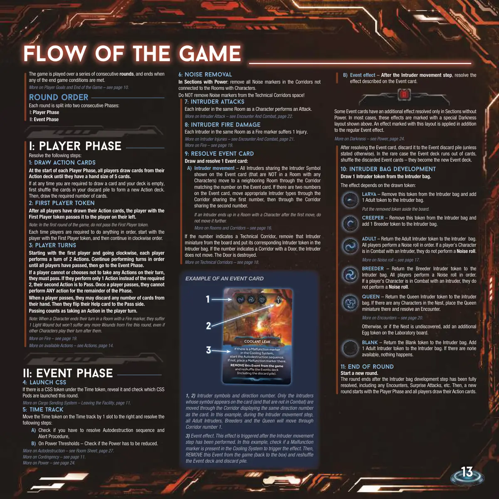
📝 第 13 页 AI 机翻对照（点击展开）
游戏通过一系列连续的回合进行，当满足任何游戏结束条件时结束。
关于玩家目标和游戏结束的更多信息 – 参见第10页。
回合顺序
每个回合分为两个连续阶段：
I: 玩家阶段
II: 事件阶段
i: 玩家阶段
执行以下步骤：
1: 行动卡牌
在每个玩家阶段开始时，所有玩家从他们的行动牌库中抽牌，直到手牌数量达到5张。
如果在任何时候你需要抽牌但你的牌库已空，首先将弃牌堆中的牌洗匀形成新的行动牌库，然后抽所需数量的牌。
2: 先行玩家指示物
在所有玩家抽完他们的行动卡牌后，拥有先行玩家指示物的玩家将其传递给左边的一位玩家。
注意：在游戏的第一回合，不要传递先行玩家指示物。
每当玩家需要按顺序执行任何操作时，从拥有先行玩家指示物的玩家开始，然后按顺时针方向继续。
3: 玩家回合
从第一个玩家开始，按顺时针方向，每个玩家执行2个行动的回合。继续按顺序执行回合，直到所有玩家都通过，然后进入事件阶段。
如果玩家无法或选择不在他们的回合中执行任何行动，他们必须通过。如果他们只执行了1个行动而非所需的2个，他们的第二个行动就是通过。一旦玩家通过，他们在该阶段的剩余时间内不能执行任何行动。
当玩家通过时，他们可以弃掉任意数量的手牌。然后将他们的帮助卡翻到通过面。
通过算作玩家回合中的一个行动。
注意：当一个角色在带有火灾标记的房间结束他们的回合时，他们会受到1点轻伤，但本回合不会再受到火灾造成的任何伤害，即使其他角色在他们之后进行回合。
关于火灾的更多信息 – 参见第19页。
关于可用行动的更多信息 – 参见行动，第14页。
ii: 事件阶段
4: 发射CSS
如果时间指示物下方有一个CSS指示物，揭示它并检查哪些CSS舱本回合被发射。
关于货物发送系统 – 离开设施，第11页。
5: 时间轨道
将时间轨道上的时间指示物向右移动1个格位，并执行以下步骤：
A) 检查是否需要解决自毁序列和警报程序，
B) 在能量阈值上 – 检查能量是否需要减少。
关于自毁的更多信息 – 参见房间卡，第27页。
关于应急计划的更多信息 – 参见第11页。
关于能量的更多信息 – 参见第24页。
6: 噪声移除
在有能量的区域：移除所有未连接到有角色的房间的走廊中的噪声标记。
不要从技术走廊格位移除噪声标记！
7: 入侵者攻击
每个与角色在同一房间的入侵者执行一次攻击。
<!--page:N-->
关于入侵者攻击的更多信息 – 请见遭遇战与战斗，第22页。
8: 入侵者火焰伤害
与火焰标记在同一房间内的每个入侵者受到1点伤害。
关于入侵者伤害的更多信息 – 请见遭遇战与战斗，第21页。
关于火焰的更多信息 – 请见第19页。
9: 解决事件卡
抽取并解决1张事件卡：
A) 入侵者移动 – 所有共享事件卡上显示的入侵者符号（不在任何角色所在房间）的入侵者，通过与事件卡上数字匹配的走廊移动到相邻房间。如果事件卡上有两个数字，则让相应的入侵者类型通过匹配第一个数字的走廊移动，然后通过匹配第二个数字的走廊移动。
如果入侵者在第一次移动后进入一个有角色的房间，则不再进一步移动。
关于房间和走廊的更多信息 – 请见第16页。
如果数字表示技术走廊，则将该入侵者小模型从版图上移除，并将其对应的入侵者指示物放入入侵者袋中。如果数字表示有门的走廊，则入侵者不移动。门被摧毁。
关于技术走廊的更多信息 – 请见第18页。
B) 事件效果 – 在入侵者移动步骤后，解决事件卡上描述的效果。
某些事件卡有一个仅在无电区域解决的额外效果。在大多数情况下，这些效果用上面显示的特殊黑暗布局标记。标记有此布局的效果除了常规事件效果外还会应用。
关于黑暗的更多信息 – 请见电力，第24页。
解决事件卡后，将其弃入事件弃牌堆（除非另有说明）。在事件卡组用完的罕见情况下，将弃置的事件牌洗混 – 它们成为新的事件牌组。
10: 入侵者袋发展
从入侵者袋中抽取1个入侵者指示物。
效果取决于抽到的指示物：
幼虫 – 将此指示物从入侵者袋中移除，并向入侵者袋中添加1个成虫指示物。
将移除的指示物放在版图旁边。
爬行者 – 将此指示物从入侵者袋中移除，并向入侵者袋中添加1个繁殖者指示物。
成虫 – 将成虫入侵者指示物放回入侵者袋。
所有玩家依次进行噪音检定。如果玩家的角色正在与入侵者战斗，则不进行噪音检定。
关于噪音检定的更多信息 – 请见第17页。
繁殖者 – 将繁殖者入侵者指示物放回入侵者袋。所有玩家依次进行噪音检定。
如果玩家的角色正在与入侵者战斗，则不进行噪音检定。
皇后 – 将皇后入侵者指示物放回入侵者袋。如果巢穴中有任何角色，则将皇后小模型放置在那里并解决一次遭遇。
关于遭遇的更多信息 – 请见第20页。
否则，或者如果巢穴尚未被发现，则在实验室版图上额外添加1个卵指示物。
事件卡示例
冷却剂泄漏
如果冷却系统中有一个故障标记，则启动自毁序列。
如果没有，则在冷却系统中放置一个故障标记。
将此事件从游戏中移除，并重新洗牌事件牌库（包括弃牌堆）。
1, 2) 入侵者符号和方向数字。只有符号出现在卡牌上的入侵者（且不在战斗中）才会沿着与卡牌相同方向数字的通道移动。在此示例中，在入侵者移动步骤期间，所有成年入侵者、繁殖者和皇后将沿着1号通道移动。
- 事件效果。此效果在入侵者移动步骤执行后触发。在此示例中，检查冷却系统中是否存在故障标记以触发效果。然后，将此事件从游戏中移除（放回盒子），并重新洗牌事件牌库和弃牌堆。
游戏流程
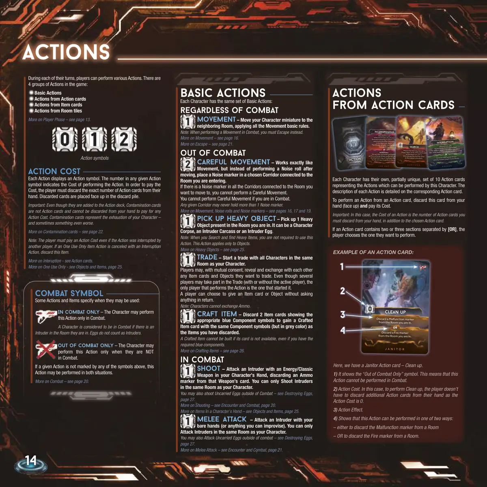
📝 第 14 页 AI 机翻对照（点击展开）
在每个玩家的回合中，玩家可以执行各种行动。游戏中有4组行动：
基本行动
行动卡牌的行动
物品卡牌的行动
房间板块的行动
更多关于玩家阶段的内容——参见第13页。
行动符号
行动费用
每个行动都显示一个行动符号。任何给定行动符号中的数字表示执行该行动的费用。为了支付费用，玩家必须从手牌中弃掉确切数量的行动卡。弃掉的牌被面朝上放置在弃牌堆中。
重要：尽管污染卡被加入行动牌库，但它们不是行动卡，不能从你的手牌中弃掉来支付任何行动费用。污染卡代表你角色的耗竭——有时甚至是更糟糕的情况。
更多关于污染卡的内容——参见第22页。
注意：即使行动被其他玩家中断，玩家也必须支付行动费用。如果一个一次性物品行动被中断行动取消，则弃掉该物品。
更多关于中断——参见行动卡。
更多关于一次性——参见物品与物品，第25页。
战斗符号
某些行动和物品指定了它们何时可以使用：
仅在战斗中——角色只能在战斗中执行此行动。
如果角色所在的房间内有入侵者(Intruder)，则该角色被认为处于战斗中。蛋(Eggs)不算作入侵者。
仅在战斗外——角色只能在非战斗状态下执行此行动。
如果某个行动没有被上述任何符号标记，则该行动在两种情况下都可以执行。
更多关于战斗——参见第20页。
基本行动
每个角色都有相同的基本行动集：
无论战斗状态
移动——将你的角色小模型移动到相邻的房间，应用所有移动基本规则。
注意：在战斗中执行移动时，你必须改为逃跑(Escape)。
更多关于移动——参见第16页。
更多关于逃跑——参见第21页。
战斗外状态
谨慎移动——与移动完全相同，但在移动后不执行噪音检定(Noise roll)，而是在你进入的房间相连的走廊中选择一个放置一个噪音标记(Noise marker)。
如果你想要移动到的房间相连的所有走廊中都有噪音标记，你不能执行谨慎移动。
如果你处于战斗中，你不能执行谨慎移动。
任何走廊最多只能持有1个噪音标记。
更多关于移动、噪音检定和噪音标记——参见第16、17和19页。
拾取重物——拾取你所在房间内的1个重物(Heavy Object)。它可以是角色尸体(Character Corpse)、入侵者尸体(Intruder Carcass)或入侵者蛋(Intruder Egg)。
注意：当你搜索并找到重物(Heavy Items)时，不需要使用此行动。此行动仅适用于物体(Objects)。
更多关于重物——参见第25页。
交易 – 与您角色所在房间内的所有角色开始交易。
玩家可以经相互同意，向彼此揭示并交换他们想要交易的任何物品卡和物品。尽管可能有多个玩家参与交易（无论是否包含当前玩家），但执行此行动的只有发起该行动的玩家。
玩家可以选择给予物品卡或物品而不要求任何回报。
注意：角色不能交换弹药。
制作物品 – 弃掉2张显示相应蓝色组件符号的物品卡，以获得一张具有相同组件符号（但为灰色）的制作物品卡。
如果制作物品的卡牌不可用，即使您拥有所需的蓝色组件，也无法制作该物品。
关于制作物品的更多信息 – 参见第26页。
在战斗中
射击 – 用您角色手中的能量/经典武器攻击入侵者，并从该武器卡牌上弃掉一个弹药指示物。您只能射击与您角色在同一房间内的入侵者。
您也可以在战斗外射击未携带的蛋 – 参见摧毁蛋，第27页。
关于射击的更多信息 – 参见遭遇战和战斗，第20页。
关于角色手中的物品的更多信息 – 参见物品和物品，第25页。
近战攻击 – 用您的赤手空拳（或任何您可以临时使用的东西）攻击入侵者。您只能攻击与您角色在同一房间内的入侵者。
您也可以在战斗外攻击未携带的蛋 – 参见摧毁蛋，第27页。
关于近战攻击的更多信息 – 参见遭遇战和战斗，第21页。
行动卡示例：
J A N I T O R
清洁
弃掉您所在房间的一个故障指示物。
或者
弃掉您所在房间的一个火焰指示物。
这里我们有一张清洁工行动卡 – 清洁。
- 它显示"仅限战斗外"符号。这意味着此行动不能在战斗中执行。
- 行动成本。在这种情况下，执行清洁行动时，玩家不必从手牌中弃掉额外的行动卡，因为行动成本为0。
- 行动效果。
4) 显示此行动可以通过两种方式之一执行：
– 弃掉房间的一个故障指示物
– 或者弃掉房间的一个火焰指示物。
行动
行动卡中的行动
行动
L A B R A T
不起眼
当入侵者攻击您时（但在抽取攻击卡之前）且您所在的房间有另一个角色时，弃掉此卡。
入侵者攻击此角色而不是您。
或者
在黑暗中：
在事件阶段的入侵者包发展阶段，当您必须进行噪音检定时，弃掉此卡。
您不必进行此检定。
幸存者
搜索
将物品计数器减1。
抽取2张与您所在房间颜色相同的物品卡。
选择一张并将其另一张弃到其牌库底部。
H A C K E R
中断
弃掉此卡牌
以取消你在同一房间内另一名玩家执行的任何行动
（另一名玩家仍必须支付行动费用）。
或者
取消你房间内另一名玩家使用的中断行动。
每个角色都有自己独特的10张行动卡牌集合的一部分，代表该角色可以执行的行动。
每项行动的详细说明在相应的行动卡牌上。
要从行动卡牌执行行动，从你的手牌中弃掉此卡牌（正面朝上）并支付其费用。
重要：在这种情况下，行动的费用是你必须从手牌中弃掉的行动卡牌数量，除了所选的行动卡牌。
如果一张行动卡牌包含两个或三个由[OR]分隔的部分，玩家选择他们想要执行的部分。
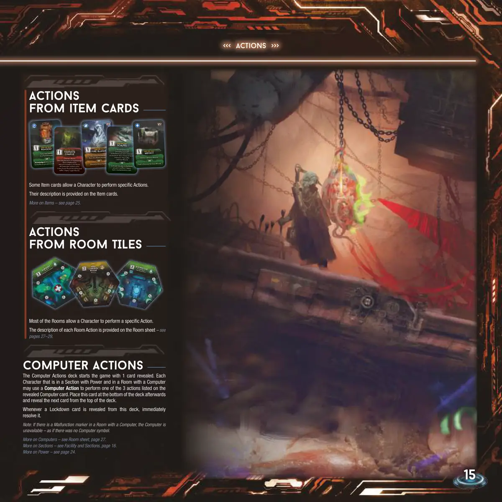
📝 第 15 页 AI 机翻对照（点击展开）
<<< 行动 >>>
ACTioNS
FroM iTEM CArDS
仅限使用一次
试剂
为火焰喷射器装满弹药。
或者
知识 5：选择你所在房间内的 1 个入侵者。它撤退。
仅限使用一次
铝热剂
电荷
选择 1 个房间
（你所在的房间或相邻房间）。
在此房间放置 1 个故障标记和 1 个火焰标记。
所选房间内的所有角色和入侵者
（包括你）受到 1 点伤害/轻伤。
仅限使用一次
防火毯
从你所在的房间弃置 1 个火焰标记。
或者
弃置 1 个粘液标记。
仅限使用一次
手术刀
你所在房间内的 1 个选定角色
（包括你自己）从其角色板上移除 1 个幼虫。
如果他们这样做，他们会受到 1 点重伤。
或者
你所在房间内的 1 个选定入侵者受到 1 点伤害。
获得 1 张污染卡。
仅限使用一次
医疗包
包扎 1 点重伤。
或者
治愈 1 点已包扎的重伤。
一些物品卡允许角色执行特定行动。
其描述在物品卡上提供。
更多关于物品的信息 – 见第 25 页。
ACTioNS
FroM rooM TILES
手术室
执行
一项外科手术
测试实验室
知识 4：
获取中和剂
通风口
控制
室
排出
大多数房间允许角色执行特定行动。
每个房间行动的描述在房间表上提供 – 见
第 27-29 页。
电脑行动
电脑行动牌组开始游戏时翻开 1 张牌。每个
位于有电力的区域且有电脑的房间内的角色可以使用电脑行动来执行翻开电脑牌上列出的 3 个行动之一。之后将此牌放到牌组底部并翻开牌组顶部的下一张牌。
每当从此牌组中翻开封锁卡时，立即
解决它。
注意：如果有一个电脑的房间内有故障标记，则该电脑
不可用 – 就好像没有电脑符号一样。
更多关于电脑的信息 – 见房间表，第 27 页。
更多关于区域的信息 – 见设施和区域，第 16 页。
更多关于电力的信息 – 见第 24 页。
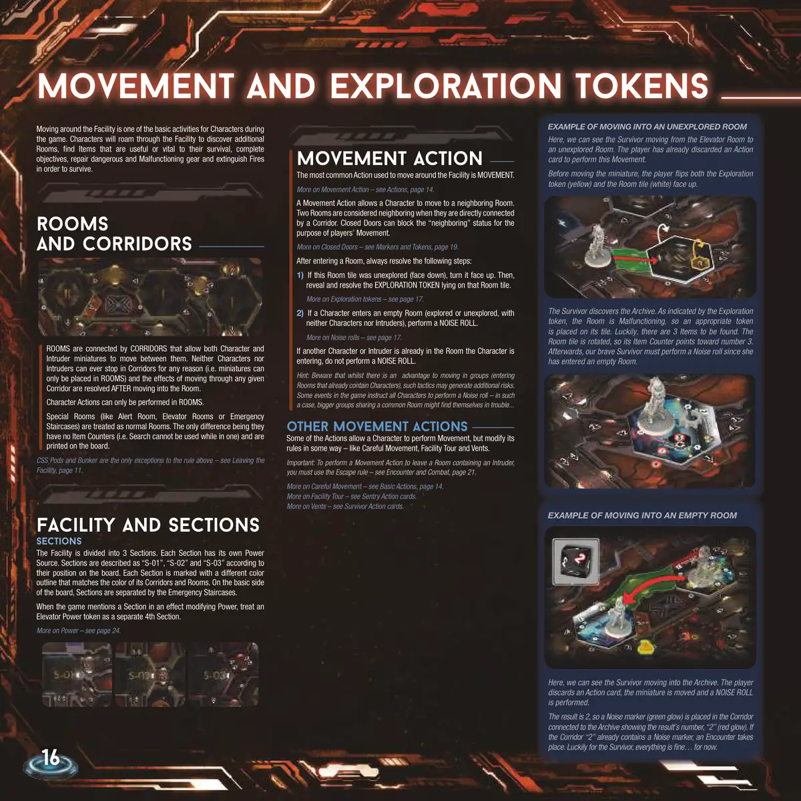
📝 第 16 页 AI 机翻对照（点击展开）
在设施中移动是角色在游戏期间的基本活动之一。角色将在设施中游荡，以发现额外的房间，寻找对他们生存有用或至关重要的物品，完成目标，修复危险和故障的设备，并扑灭火焰，以求生存。
房间
和走廊
房间通过走廊连接，走廊允许角色和入侵者小模型在它们之间移动。无论出于何种原因，角色和入侵者都不能在走廊中停留（即小模型只能放置在房间中），并且穿过任何特定走廊的效果在进入房间后才会结算。
角色行动只能在房间中执行。
特殊房间（如警报室、电梯间或紧急楼梯）被视为普通房间。唯一的区别是它们没有物品标记（即在其中不能使用搜索），并且印刷在版图上。
CSS 舱和掩体是上述规则的唯一例外——参见离开设施，第11页。
设施和区域
区域
设施分为3个区域。每个区域都有自己的电源。根据它们在版图上的位置，区域被描述为"S-01"、"S-02"和"S-03"。每个区域都有一个不同颜色的轮廓，与其走廊和房间的颜色相匹配。在版图的基本面，区域由紧急楼梯分隔。
当游戏效果中提到修改电源的区域时，将电梯电源指示物视为独立的第4个区域。
更多关于电源的内容——参见第24页。
移动行动
用于在设施中移动的最常见行动是移动。
更多关于移动行动的内容——参见行动，第14页。
移动行动允许角色移动到相邻的房间。当两个房间直接由走廊连接时，它们被认为是相邻的。关闭的门可以阻止房间的"相邻"状态，以便于玩家移动。
更多关于关闭门的内容——参见标记和指示物，第19页。
进入房间后，始终执行以下步骤：
- 如果这个房间板块未被探索（面朝下），则将其翻到面朝上。然后，揭示并解决位于该房间板块上的探索标记。
更多关于探索标记的内容——参见第17页。
- 如果角色进入一个空房间（已探索或未探索，既没有角色也没有入侵者），则进行噪音检定。
更多关于噪音检定的内容——参见第17页。
如果另一个角色或入侵者已经在角色要进入的房间中，则不要进行噪音检定。
提示：请注意，虽然集体移动（进入已有角色的房间）有优势，但这样的策略可能会产生额外的风险。
游戏中的一些事件指示所有角色进行噪音检定——在这种情况下
<!--page:N-->
一个案例，更大的共享公共房间的群体可能会发现自己陷入了麻烦...
其他移动行动
一些行动允许角色执行移动，但以某种方式修改其规则——例如谨慎移动、设施导览和通风口。
重要：要执行离开包含入侵者的房间的移动行动，你必须使用逃脱规则——参见遭遇与战斗，第21页。
更多关于谨慎移动的信息——参见基本行动，第14页。
更多关于设施导览的信息——参见岗哨行动卡。
更多关于通风口的信息——参见幸存者行动卡。
移动和探索指示物
移入未探索房间的示例
在这里，我们可以看到幸存者从电梯房间移动到一个未探索的房间。玩家已经弃掉一张行动卡来执行这次移动。
在移动模型之前，玩家将探索指示物（黄色）和房间板块（白色）都翻到正面。
幸存者发现了档案馆。如探索指示物所示，房间处于故障状态，因此在板块上放置了相应的指示物。幸运的是，这里有3个物品可被发现。房间板块被旋转，使其物品计数器指向数字3。
之后，我们勇敢的幸存者必须执行一次噪音检定，因为她进入了一个空房间。
移入空房间的示例
在这里，我们可以看到幸存者移动到档案馆。玩家弃掉一张行动卡，移动模型并执行一次噪音检定。
结果是2，因此在连接档案馆的走廊上放置一个噪音标记（绿色光晕），显示结果的数字"2"（红色光晕）。如果走廊"2"已经包含一个噪音标记，则发生遭遇。对幸存者来说幸运的是，一切正常...至少现在是这样。
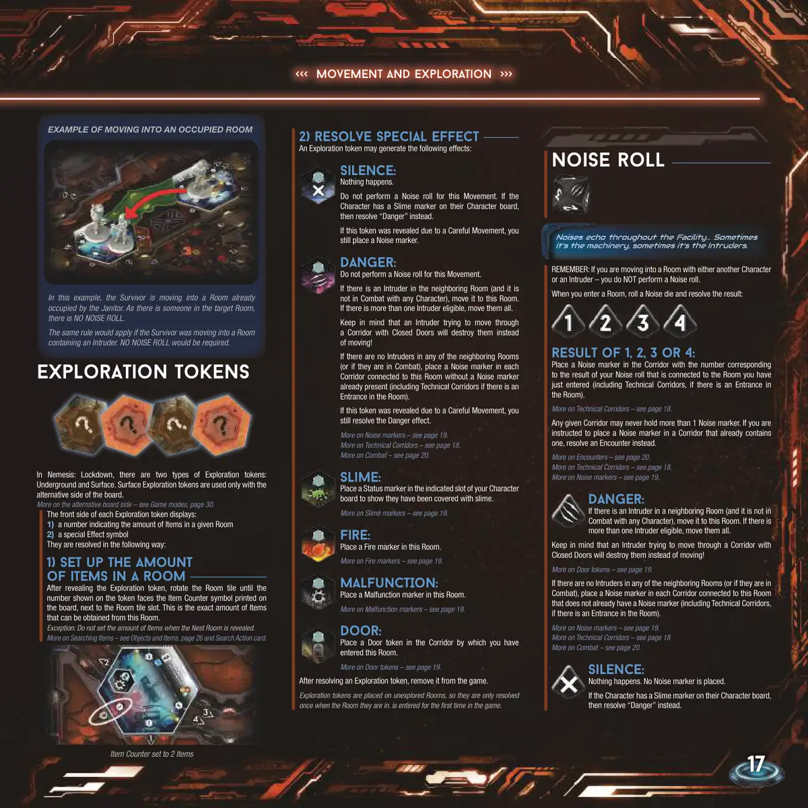
📝 第 17 页 AI 机翻对照（点击展开）
探索指示物
在《Nemesis: Lockdown》中，有两种探索指示物：地下和地表。地表探索指示物仅与版图的另一面一起使用。
关于替代版图面更多信息——参见游戏模式，第30页。
每张探索指示物的正面显示：
- 一个数字，表示特定房间内物品的数量
- 一个特殊效果符号
它们按以下方式解决：
1) 设置房间内物品的数量
揭示探索指示物后，旋转房间板块，直到指示物上显示的数字朝向版图上印刷在房间板块槽旁边的物品计数器符号。这是可以从该房间获得的物品的确切数量。
例外：当揭示巢穴房间时，不要设置物品数量。
关于搜索物品更多信息——参见物品与道具，第26页和搜索行动卡。
物品计数器设置为2个物品
<<< 移动与探索 >>>
- 解决特殊效果
探索指示物可能产生以下效果：
安静：
什么都不发生。
此次移动不进行噪音检定。如果角色在其角色板块上有粘液标记，则改为解决"危险"。
如果此指示物是由于谨慎移动而揭示的，你仍然放置一个噪音标记。
危险：
此次移动不进行噪音检定。
如果相邻房间内有入侵者（且没有与任何角色处于战斗状态），将其移动到这个房间。
如果有多个符合条件的入侵者，将它们全部移动。
请注意，试图通过关闭门的走廊移动的入侵者会摧毁门而不是移动！
如果相邻房间中没有入侵者（或者它们处于战斗状态），在每个连接到该房间且没有已有噪音标记的走廊中放置一个噪音标记（如果房间有入口，包括技术走廊）。
如果此指示物是由于谨慎移动而揭示的，你仍然解决危险效果。
关于噪音标记更多信息——参见第19页。
关于技术走廊更多信息——参见第18页。
关于战斗更多信息——参见第20页。
粘液：
在你的角色板块的指定槽位放置一个状态标记，表示角色被粘液覆盖。
关于粘液标记更多信息——参见第19页。
火焰：
在此房间放置一个火焰标记。
关于火焰标记更多信息——参见第19页。
故障：
在此房间放置一个故障标记。
关于故障标记更多信息——参见第19页。
门：
在你进入此房间的走廊上放置一个门指示物。
关于门指示物更多信息——参见第19页。
解决探索指示物后，将其从游戏中移除。
探索指示物放置在未探索的房间上，因此它们仅在游戏首次进入它们所在的房间时解决一次。
进入已占用房间的示例
在这个例子中，幸存者正要进入一个已有清洁师占据的房间。由于目标房间中有人，因此无需进行噪音检定。
如果幸存者进入一个包含入侵者的房间，同样适用此规则。无需进行噪音检定。
噪音检定
噪音在整个设施中回荡...有时是机器发出的，有时是入侵者发出的。
记住：如果你进入一个有其他角色或入侵者的房间，你不进行噪音检定。
当你进入一个房间时，投掷一个噪音骰子并结算结果：
结果为1、2、3或4：
在连接到你刚刚进入的房间的走廊中放置一个噪音标记，其数字对应于你的噪音检定结果（如果房间有入口，也包括技术走廊）。
更多关于技术走廊的信息——参见第18页。
任何走廊最多只能容纳1个噪音标记。如果你被指示在一个已有噪音标记的走廊中放置一个噪音标记，则进行一次遭遇战结算。
更多关于遭遇战的信息——参见第20页。
更多关于技术走廊的信息——参见第18页。
更多关于噪音标记的信息——参见第19页。
危险：
如果相邻房间有一个入侵者（并且它没有与任何角色进行战斗），则将其移动到这个房间。如果有多个符合条件的入侵者，将它们全部移动。
记住，试图穿过有关闭门牌的走廊的入侵者会摧毁门牌而不是移动！
更多关于门牌标记的信息——参见第19页。
如果相邻房间中没有入侵者（或者它们正在战斗），则在连接到这个房间的每条走廊中放置一个噪音标记（如果房间有入口，也包括技术走廊），但该走廊尚无噪音标记。
更多关于噪音标记的信息——参见第19页。
更多关于技术走廊的信息——参见第18页。
更多关于战斗的信息——参见第20页。
寂静：
什么都不会发生。不放置噪音标记。
如果角色在其角色版图上有粘液标记，则改为结算"危险"。
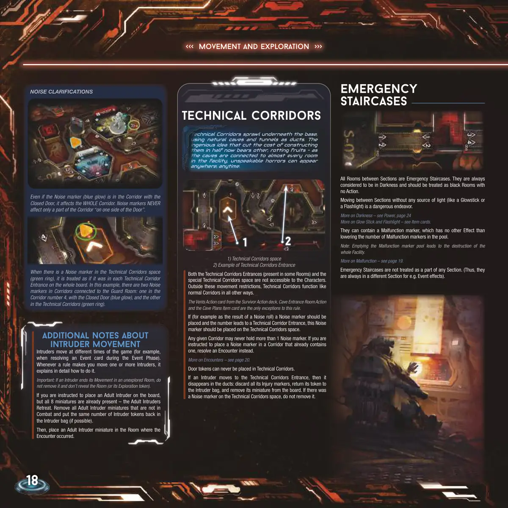
📝 第 18 页 AI 机翻对照（点击展开）
技术走廊
技术走廊在基地下方蔓延，利用天然洞穴和隧道作为管道。那个将建造成本削减一半的巧妙想法如今结出了其他腐烂的果实——由于洞穴几乎连接到设施中的每个房间，不可名状的恐怖可能随时、随地出现。
1) 技术走廊区域
2) 技术走廊入口示例
技术走廊入口（存在于某些房间中）和特殊技术走廊区域对角色都不可进入。在这些移动限制之外，技术走廊在所有其他方面都像普通走廊一样运作。
幸存者行动牌库中的通风口行动卡、洞穴入口房间行动和洞穴计划物品卡是这条规则的唯一例外。
如果（例如，作为噪音检定的结果）应该放置一个噪音标记，而数字指向技术走廊入口，则该噪音标记应放置在技术走廊区域。
任何走廊最多只能容纳1个噪音标记。如果你被指示在一个已经包含噪音标记的走廊中放置一个噪音标记，则进行一次遭遇检定。
更多关于遭遇检定的信息——参见第20页。
门标记永远不能放置在技术走廊中。
如果入侵者移动到技术走廊入口，它就会在管道中消失：弃置其所有伤害标记，将其标记放回入侵者袋中，并从版图上移除其模型。如果技术走廊区域上有噪音标记，不要移除它。
<<< 移动和探索 >>>
紧急楼梯
所有区域之间的房间都是紧急楼梯。它们总是被认为处于黑暗中，应被视为没有行动的黑色房间。
在没有光源（如荧光棒或手电筒）的情况下在不同区域之间移动是危险的。
更多关于黑暗的信息——参见力量，第24页
更多关于荧光棒和手电筒的信息——参见物品牌。
它们可以包含一个故障标记，除了减少故障标记池中的数量外，没有其他效果。
注意：清空故障标记池会导致整个设施被摧毁。
更多关于故障的信息——参见第19页。
紧急楼梯不被视为任何区域的一部分。（因此，对于事件效果等，它们总是处于不同的区域）。
关于入侵者移动的附加说明
入侵者在游戏的不同时间移动（例如，在事件阶段解决事件卡时）。
每当一条规则要求你移动一个或多个入侵者时，它会详细说明如何操作。
重要：如果入侵者在其移动结束时位于一个未探索的房间中，不要移除它，也不要揭示该房间（或其探索标记）。
如果你被指示在版图上放置一个成人入侵者，
但所有8个迷你模型已经存在——成人入侵者撤退。
移除所有不在战斗中的成人入侵者迷你模型，
并将相同数量的入侵者指示物放回入侵者袋中（如果可能）。
然后在遭遇发生的房间中放置一个成人入侵者迷你模型。
噪声说明
即使噪声标记（蓝色光晕）在关闭门的走廊中，
它也会影响整个走廊。噪声标记永远不会只影响走廊"门的一侧"的一部分。
当噪声标记在技术走廊格（绿色圆环）中时，
它被视为位于整个版图上的每个技术走廊入口处。在此示例中，
有两个噪声标记在连接到警卫室的走廊中：一个在4号走廊，
带有关闭门（蓝色光晕），另一个在技术走廊（绿色圆环）中。
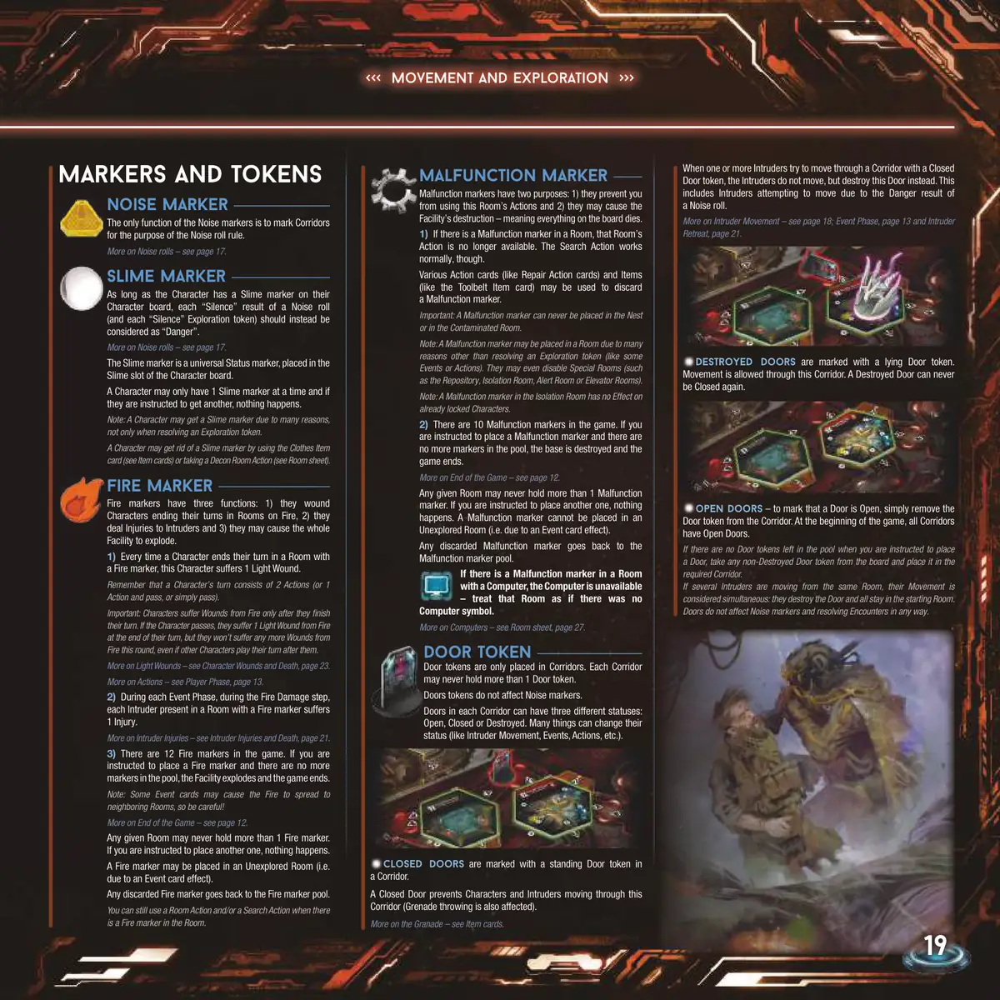
📝 第 19 页 AI 机翻对照（点击展开）
指示物和标记
噪音标记
噪音标记的唯一功能是为了噪音投掷规则而标记走廊。
关于噪音投掷的更多信息——参见第17页。
粘液标记
只要角色在其角色版上有一个粘液标记，每次噪音投掷的"静音"结果（以及每个"静音"探索标记）应被视为"危险"。
关于噪音投掷的更多信息——参见第17页。
粘液标记是一个通用状态标记，放置在角色版的粘液槽中。
一个角色同时只能有1个粘液标记，如果他们被指示获得另一个，则什么都不会发生。
注意：角色可能因多种原因获得粘液标记，不仅是在解决探索标记时。
角色可以通过使用衣物物品卡（参见物品卡）或进行除污室行动（参见室表）来摆脱粘液标记。
火焰标记
火焰标记有三个功能：1）它们使在着火的室中结束回合的角色受伤，2）它们对入侵者造成伤害，3）它们可能导致整个设施爆炸。
- 每当角色在有火焰标记的室中结束其回合时，该角色受到1点轻伤。
记住，一个角色的回合包括2个行动（或1个行动并跳过，或直接跳过）。
重要：角色只有在完成回合后才会受到火焰的伤害。如果角色跳过，他们在回合结束时受到1点火焰轻伤，但本回合内他们不会再受到任何火焰伤害，即使其他角色在他们之后进行回合。
关于轻伤的更多信息——参见角色伤口与死亡，第23页。
关于行动的更多信息——参见玩家阶段，第13页。
2) 在每个事件阶段，在火焰伤害步骤中，每个在有火焰标记的室中的入侵者受到1点伤害。
关于入侵者伤害的更多信息——参见入侵者伤害与死亡，第21页。
- 游戏中有12个火焰标记。如果你被指示放置一个火焰标记而池中已没有更多标记，设施爆炸，游戏结束。
注意：一些事件卡可能导致火焰蔓延到相邻的室，所以要小心！
关于游戏结束的更多信息——参见第12页。
任何给定的室都不能容纳超过1个火焰标记。如果你被指示放置另一个，则什么都不会发生。
火焰标记可以放置在未探索的室中（即由于事件卡效果）。
任何被弃置的火焰标记都会回到火焰标记池中。
当室中有火焰标记时，你仍然可以使用室行动和/或搜索行动。
故障标记
故障标记有两个目的：1）它们阻止你使用该室的行动，2）它们可能导致设施的毁灭——意味着版图上的一切都死亡。
- 如果一个室中有故障标记，该室的
行动不再可用。搜索行动（Search Action）仍可正常使用。
各种行动卡（如维修行动卡）和物品（如工具带物品卡）可用于弃置一个故障标记（Malfunction marker）。
重要：故障标记绝不能放置在巢穴（Nest）或污染室（Contaminated Room）中。
注意：故障标记可能因多种原因（而非解决探索标记）而被放置在房间中（如某些事件或行动）。它们甚至可能使特殊房间失效（如储藏室（Repository）、隔离室（Isolation Room）、警报室（Alert Room）或电梯室（Elevator Rooms））。
注意：隔离室中的故障标记对已锁定的角色（Characters）没有效果。
- 游戏中有10个故障标记。如果你被指示放置一个故障标记而池中已无标记，则基地被摧毁，游戏结束。
关于游戏结束的更多信息——见第12页。
任何房间最多只能容纳1个故障标记。如果你被指示放置另一个，则什么都不会发生。故障标记不能放置在未探索区域（Unexplored Room）（即由于事件卡效果）。
任何被弃置的故障标记都会回到故障标记池中。
如果房间中有计算机（Computer）且放置了故障标记，则该计算机不可用——将该房间视为没有计算机符号。
关于计算机的更多信息——见房间表，第27页。
门标记（Door ToKEN）
门标记仅放置在走廊（Corridors）中。每个走廊最多只能容纳1个门标记。
门标记不影响噪音标记（Noise markers）。
每个走廊的门可以有三种状态：开启（Open）、关闭（Closed）或被摧毁（Destroyed）。许多事情可以改变它们的状态（如入侵者移动、事件、行动等）。
关闭的门（CLoSED DoorS）用直立放置的门标记在走廊中标记。
关闭的门阻止角色和入侵者通过此走廊移动（手榴弹投掷也受到影响）。
关于手榴弹的更多信息——见物品卡。
当一个或多个入侵者试图通过放置有关闭门标记的走廊移动时，入侵者不移动，而是摧毁这扇门。这包括因噪音掷骰的危险结果（Danger result）而尝试移动的入侵者。
关于入侵者移动的更多信息——见第18页；事件阶段，第13页和入侵者撤退，第21页。
被摧毁的门（DESTroYED DoorS）用平放的门标记表示。
允许通过此走廊移动。被摧毁的门不能再被关闭。
开启的门（opEN DoorS）——要标记门是开启的，只需从走廊中移除门标记。游戏开始时，所有走廊都有开启的门。
当你被指示放置门而门标记池中没有剩余标记时，从版图上取一个未被摧毁的门标记，并将其放置在所需的走廊中。
如果多个入侵者从同一房间移动，他们的移动是
被视为同时进行：他们摧毁门，并且所有人都留在起始房间。
门不会以任何方式影响噪音标记和解决遭遇事件。
<<< 移动和探索 >>>
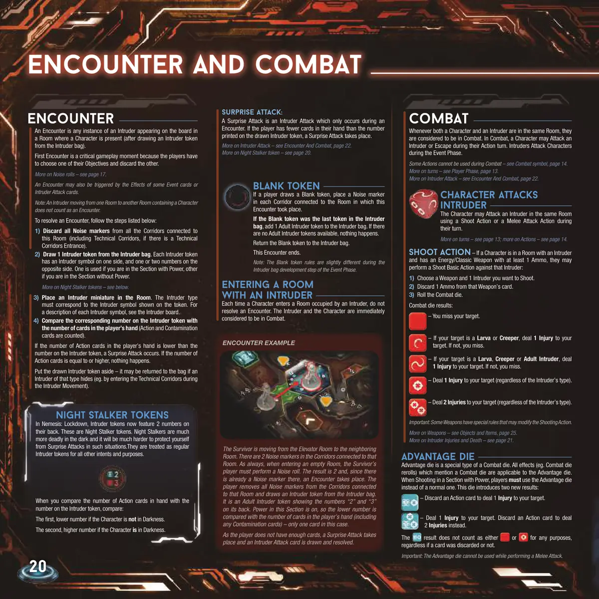
📝 第 20 页 AI 机翻对照（点击展开）
遭遇
遭遇是指入侵者在角色所在的房间（从入侵者袋中抽取入侵者指示物后）出现在版图上的任何情况。
首次遭遇是一个关键的游戏时刻，因为玩家必须选择一个目标并弃掉另一个。
关于噪音投掷的更多信息——参见第17页。
遭遇也可能由某些事件卡或入侵者攻击卡的效果触发。
注意：入侵者从一个房间移动到另一个包含角色的房间，不视为遭遇。
要解决遭遇，请遵循下列步骤：
1) 弃掉与此房间相连的所有走廊中的所有噪音标记（如果有技术走廊入口，也包括技术走廊）。
- 从入侵者袋中抽取1个入侵者指示物。每个入侵者指示物的一面有一个入侵者符号，另一面有一个或两个数字。如果你在有电力的区域中使用一个，在没有电力的区域中使用另一个。
关于夜行者指示物的更多信息——见下文。
- 在房间中放置一个入侵者小模型。入侵者类型必须与指示物上显示的入侵者符号相对应。有关每个入侵者符号的描述，请参见入侵者版图。
4) 将入侵者指示物上的相应数字与玩家手牌数量（行动卡和污染卡均计入）进行比较。
如果玩家手牌中的行动卡数量低于入侵者指示物上的数字，则发生突袭。如果行动卡数量等于或高于该数字，则什么都不会发生。
将抽到的入侵者指示物放在一边——如果该类型的入侵者躲藏（例如，在入侵者移动期间进入技术走廊），可能会将其返回到袋中。
遭遇与战斗
战斗
每当角色和入侵者在同一房间时，他们被认为处于战斗状态。在战斗中，角色可以在其行动回合攻击入侵者或逃跑。入侵者在事件阶段攻击角色。
某些行动不能在战斗中使用——参见战斗符号，第14页。
关于回合的更多信息——参见玩家阶段，第13页。
关于入侵者攻击的更多信息——参见遭遇与战斗，第22页。
角色攻击入侵者
角色可以在同一房间中使用射击行动或近战攻击行动在其回合攻击入侵者。
关于回合的更多信息——参见第13页；关于行动的更多信息——参见第14页。
射击行动 – 如果角色与入侵者在同一房间，并且有一把至少有1点弹药的能量/经典武器，他们可以对该入侵者执行射击基础行动：
- 选择一把武器和你想要射击的1个入侵者。
- 弃掉该武器卡上的1点弹药。
- 投掷战斗骰子。
战斗骰子结果：
– 你未击中目标。
– 如果你的目标是幼虫或爬行者，对你的目标造成1点伤害。如果不是，你未命中。
– 如果你的目标是幼虫、爬行者或成年入侵者，对你的目标造成1点伤害。如果不是，你未命中。
– 对你的目标造成1点伤害（无论入侵者的类型如何）。
– 对你的目标造成2点伤害（无论入侵者的类型如何）。
重要：一些武器有特殊规则，可能会修改射击行动。
关于武器更多信息 – 参见物品与装备，第25页。
关于入侵者伤害与死亡更多信息 – 参见第21页。
优势骰子
优势骰子是一种特殊的战斗骰子。所有提及战斗骰子的效果（例如战斗骰子重掷）都适用于优势骰子。
在有电力的区域进行射击时，玩家必须使用优势骰子代替普通骰子。这个骰子引入了两个新结果：
– 弃掉1张行动牌，对你的目标造成1点伤害。
– 对你的目标造成1点伤害。弃掉1张行动牌，改为造成2点伤害。
该结果不作为任何目的的或，无论是否弃牌。
重要：进行近战攻击时不能使用优势骰子。
遭遇示例
幸存者正从电梯室移动到相邻的房间。连接到该房间的走廊中有2个噪音标记。一如既往，当进入空房间时，幸存者的玩家必须进行噪音检定。结果是2，并且由于那里已经有一个噪音标记，因此发生遭遇。玩家移除连接到该房间的所有走廊中的噪音标记，并从入侵者袋中抽取一个入侵者指示物。
这是一个成年入侵者指示物，其背面显示数字"2"和"3"。本区域的电力已开启，因此将较小的数字与玩家手牌数量（包括任何污染卡牌）进行比较——本例中只有一张牌。
由于玩家没有足够的牌，发生突袭攻击，并抽取并结算一张入侵者攻击卡牌。
突袭攻击：
突袭攻击是一种仅在遭遇期间发生的入侵者攻击。如果玩家手牌数量少于抽取的入侵者指示物上显示的数字，则发生突袭攻击。
关于入侵者攻击更多信息 – 参见遭遇与战斗，第22页。
关于夜行者指示物更多信息 – 参见第20页。
空白指示物
如果玩家抽取到空白指示物，在发生此遭遇的房间每个连接的走廊中放置1个噪音标记。
如果空白指示物是入侵者袋中的最后一个指示物，向入侵者袋中添加1个成年入侵者指示物。如果没有成年入侵者指示物可用，则什么都不发生。
将空白指示物放回入侵者袋。
此次遭遇结束。
注意：在事件阶段的入侵者袋发展步骤中，空白指示物的规则略有不同。
进入一个
有入侵者的房间
每当角色进入一个被入侵者占据的房间时，不要
进行遭遇结算。入侵者和角色立即
被认为处于战斗状态。
夜行者指示物
在《Nemesis: Lockdown》中，入侵者指示物背面现在有2个数字。这些是夜行者指示物。夜行者在黑暗中更加致命，在这种情况下，你将更难保护自己免受突袭。在其他所有方面，它们被视为常规入侵者指示物。
当你比较手牌中的行动卡数量与入侵者指示物上的数字时，比较：
如果角色不在黑暗中，比较第一个较低的数字。
如果角色在黑暗中，比较第二个较高的数字。
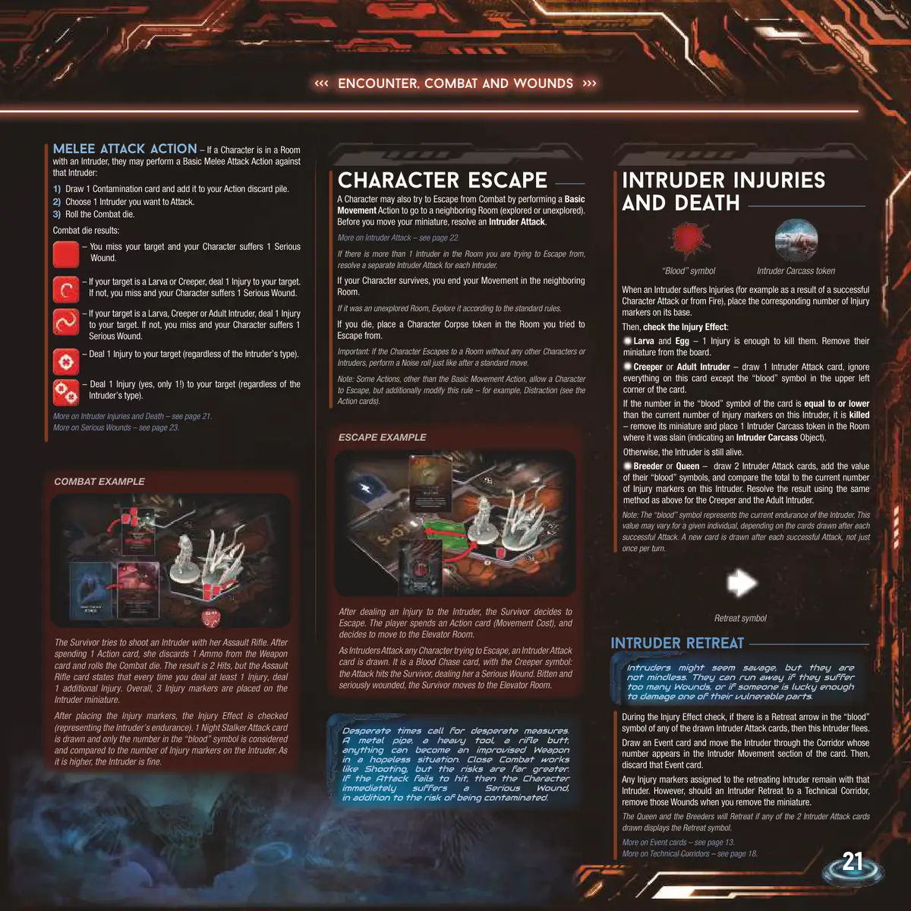
📝 第 21 页 AI 机翻对照（点击展开）
战斗示例
幸存者试图用她的突击步枪射击入侵者。在花费1张行动卡后，她从武器卡牌上弃置1枚弹药，并投掷战斗骰。结果是2次命中，但突击步枪卡牌说明每次造成至少1点伤害时，额外造成1点伤害。总共，3枚伤害指示物被放置在入侵者模型上。
放置伤害指示物后，检查伤害效果（代表入侵者的耐力）。抽取1张夜潜者攻击卡，只考虑"血液"符号中的数字，并与入侵者身上的伤害指示物数量进行比较。由于前者更高，入侵者安然无恙。
逃脱示例
在对入侵者造成伤害后，幸存者决定逃脱。玩家花费1张行动卡（移动费用），并决定移动到电梯室。
由于入侵者会攻击任何试图逃脱的角色，会抽取1张入侵者攻击卡。这是一张血腥追击卡，带有爬行者符号：攻击命中幸存者，对她造成严重创伤。被咬伤且严重受伤的幸存者移动到电梯室。
近战攻击行动 – 如果一个角色与入侵者在同一房间内，他们可以对该入侵者执行基础近战攻击行动：
- 抽取1张污染卡并将其加入你的行动弃牌堆。
- 选择1个你想要攻击的入侵者。
- 投掷战斗骰。
战斗骰结果：
– 你未命中目标，你的角色受到1点严重创伤。
– 如果你的目标是幼虫或爬行者，对你的目标造成1点伤害。否则，你未命中，你的角色受到1点严重创伤。
– 如果你的目标是幼虫、爬行者或成年入侵者，对你的目标造成1点伤害。否则，你未命中，你的角色受到1点严重创伤。
– 对你的目标造成1点伤害（无论入侵者的类型）。
– 对你的目标造成1点伤害（是的，只有1点！）（无论入侵者的类型）。
更多关于入侵者伤害和死亡 – 见第21页。
更多关于严重创伤 – 见第23页。
<<< 遭遇、战斗和伤口 >>>
角色逃脱
角色也可以通过执行基础移动行动，前往相邻房间（已探索或未探索）来尝试从战斗中逃脱。
在移动你的模型之前，解决一次入侵者攻击。
更多关于入侵者攻击 – 见第22页。
如果你试图逃脱的房间内有超过1个入侵者，为每个入侵者分别解决一次入侵者攻击。
如果你的角色幸存，你将移动结束在相邻房间。
如果是未探索的房间，根据标准规则进行探索。
如果你死亡，在你试图逃脱的房间内放置1个角色尸体指示物。
重要：如果角色逃脱到一个没有任何其他角色的房间，
入侵者执行一次噪音检定，就像在标准移动后一样。
注意：除了基本移动行动外，一些行动允许角色逃脱，但也会修改此规则——例如，分散注意力（见行动卡牌）。
入侵者伤害与死亡
"血液"符号
入侵者尸体指示物
当入侵者受到伤害时（例如，作为成功角色攻击的结果或来自火焰的伤害），在其底座上放置相应数量的伤害标记。
然后，检查伤害效果：
幼虫和卵——1点伤害就足以杀死它们。将它们的模型从版图上移除。
爬行成体或成年入侵者——抽取1张入侵者攻击卡，忽略卡上除了左上角"血液"符号之外的所有内容。
如果卡上"血液"符号中的数字小于或等于该入侵者当前伤害标记的数量，则它被杀死——移除其模型，并在它被杀死的房间中放置1个入侵者尸体指示物（表示一个入侵者尸体物体）。
否则，入侵者仍然存活。
繁殖体或女王——抽取2张入侵者攻击卡，将它们"血液"符号的数值相加，并将总数与该入侵者当前伤害标记的数量进行比较。使用与爬行成体和成年入侵者相同的方法解决结果。
注意："血液"符号代表入侵者的当前耐力。对于个体而言，这个值可能会有所不同，取决于每次成功攻击后抽取的卡牌。每次成功攻击后都会抽取新卡，而不是每回合只抽取一次。
撤退符号
入侵者撤退
入侵者可能看起来野蛮，但它们并非没有头脑。如果它们受到太多伤害，或者有人幸运地击中了它们脆弱的部位之一，它们就会逃跑。
在伤害效果检查期间，如果任何抽取的入侵者攻击卡上的"血液"符号中有撤退箭头，则该入侵者逃跑。抽取一张事件卡，并将入侵者移动到卡牌入侵者移动部分显示编号的走廊中。然后，弃掉该事件卡。
分配给撤退入侵者的任何伤害标记仍保留在该入侵者身上。但是，如果入侵者撤退到技术走廊，则在移除模型时移除这些伤害。
女王和繁殖体如果抽取的2张入侵者攻击卡中的任何一张显示撤退符号，它们就会撤退。
关于事件卡更多信息——见第13页。
关于技术走廊更多信息——见第18页。
绝望时刻需要绝望措施。
金属管、重型工具、步枪托，
任何东西在绝望的情况下都可以成为临时武器。
近战射击与射击类似，但风险要大得多。
如果攻击未命中，则角色立即
遭受
严重
伤害，
除了被污染的风险之外。
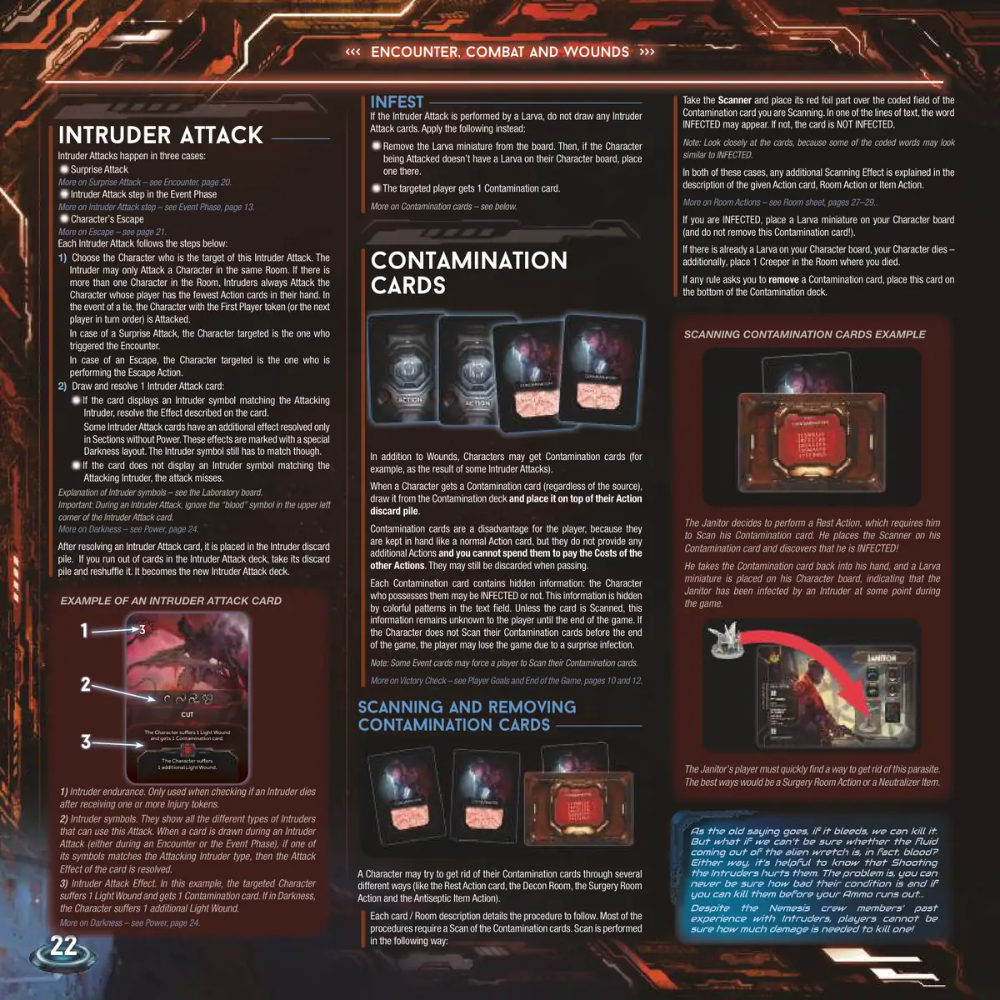
📝 第 22 页 AI 机翻对照（点击展开）
<<< 遭遇、战斗和伤口 >>>
入侵者攻击
入侵者攻击在三种情况下发生：
突袭
关于突袭的更多信息——参见遭遇，第20页。
事件阶段中的入侵者攻击步骤
关于入侵者攻击步骤的更多信息——参见事件阶段，第13页。
角色逃脱
关于逃脱的更多信息——参见第21页。
每次入侵者攻击都遵循以下步骤：
- 选择作为本次入侵者攻击目标的角色。入侵者只能攻击同一房间中的角色。如果房间中有多个角色，入侵者总是攻击手牌中行动卡数量最少的角色的玩家。如果平局，则攻击拥有起始玩家标记（或按回合顺序的下一位玩家）的角色。
在突袭的情况下，目标角色是触发遭遇的角色。
在逃脱的情况下，目标角色是执行逃脱行动的角色。
- 抽取并结算1张入侵者攻击卡：
如果卡牌显示与攻击入侵者匹配的入侵者符号，则结算卡牌上描述的效果。
一些入侵者攻击卡有仅在无能量区域才结算的额外效果。这些效果标记有特殊的黑暗布局。但入侵者符号仍需匹配。
如果卡牌没有显示与攻击入侵者匹配的入侵者符号，则攻击未命中。
入侵者符号说明——参见实验室版图。
重要：在入侵者攻击期间，忽略入侵者攻击卡左上角的"血液"符号。
关于黑暗的更多信息——参见能量，第24页。
结算入侵者攻击卡后，将其放入入侵者弃牌堆。如果入侵者攻击牌库用完，取其弃牌堆并重新洗牌。它成为新的入侵者攻击牌库。
入侵者攻击卡示例
切割
角色承受1点轻伤并获得1张污染卡。
角色承受
额外的1点轻伤。
- 入侵者耐力。仅用于在入侵者收到一个或多个伤害标记后检查其是否死亡时使用。
- 入侵者符号。它们显示所有可以使用此攻击的不同类型的入侵者。当在入侵者攻击期间（无论是在遭遇中还是事件阶段）抽取卡牌时，如果其符号之一与攻击入侵者类型匹配，则结算卡牌的攻击效果。
- 入侵者攻击效果。在此示例中，目标角色承受1点轻伤并获得1张污染卡。如果在黑暗中，角色承受额外的1点轻伤。
关于黑暗的更多信息——参见能量，第24页。
感染
如果入侵者攻击是由幼虫执行的，不要抽取任何入侵者攻击卡。而是应用以下内容：
从版图上移除幼虫指示物。然后，如果被攻击的角色在其角色版图上没有幼虫，则放置一个在那里。
目标玩家获得1张污染卡牌。
更多关于污染卡牌的信息——见下文。
污
染
卡
牌
除了创伤，角色可能会获得污染卡牌（例如，作为某些入侵者攻击的结果）。
当角色获得一张污染卡牌（无论来源如何），从污染牌库中抽取它，并将其放置在其行动弃牌堆的顶部。
污染卡牌对玩家是一种劣势，因为它们像普通行动卡牌一样保留在手牌中，但它们不提供任何额外的行动，并且你不能花费它们来支付其他行动的费用。它们仍然可以在回合结束时被弃置。
每张污染卡牌包含隐藏信息：拥有它们的角色可能被感染也可能没有被感染。这些信息被文本区域中的彩色图案所隐藏。除非卡牌被扫描，否则这些信息在游戏结束前对玩家保持未知。如果角色在游戏结束前没有扫描其污染卡牌，玩家可能会因意外感染而输掉游戏。
注意：一些事件卡牌可能强制玩家扫描其污染卡牌。
更多关于胜利检查的信息——见玩家目标和游戏结束，第10页和第12页。
扫
描
和
移
除
污
染
卡
牌
角色可以通过几种不同的方式尝试摆脱其污染卡牌（如休息行动卡牌、净化室、手术室行动和消毒剂物品行动）。
每张卡牌/房间描述都详细说明了需要遵循的程序。大多数程序需要扫描污染卡牌。扫描按以下方式执行：
扫描污染卡牌示例
清洁工决定执行休息行动，这要求他扫描其污染卡牌。他将扫描仪放置在其污染卡牌上，发现他被感染了！
他将污染卡牌拿回手牌，并在其角色版图上放置一个幼虫指示物，表明清洁工在游戏过程中的某个时刻被入侵者感染了。
清洁工的玩家必须迅速找到一种方法来摆脱这个寄生虫。最好的方法是通过手术室行动或中和剂物品。
拿起扫描仪，将其红色箔部分覆盖在你正在扫描的污染卡牌的编码区域。在文本的某一行中，可能会出现"INFECTED"（被感染）一词。如果没有，则该卡牌未被感染。
注意：仔细查看卡牌，因为一些编码的单词可能与"INFECTED"相似。
在这两种情况下，任何额外的扫描效果都会在给定的行动卡牌、房间行动或物品行动的描述中解释。
关于房间行动 – 参见房间表，第27-29页。
如果你被感染，在你的角色板块上放置一个幼虫模型（并且不要移除这张污染卡！）。
如果你的角色板块上已经有一个幼虫，你的角色死亡 – 此外，在你死亡的房间中放置1个爬行者。
如果有任何规则要求你移除一张污染卡，将这张牌放在污染牌库的底部。
俗话说，如果它会流血，我们就能杀死它。
但如果我们无法确定从那个外星怪物身上流出的液体实际上是血液怎么办？
无论如何，知道射击入侵者会伤害他们是很有帮助的。问题是，你永远无法确定他们的状况有多糟糕，以及你是否能在你的弹药耗尽之前杀死他们...
尽管
尼米西斯
船员
过去有
与入侵者
相处的
经验，
玩家
无法
确定
需要
多少
伤害
才能
杀死
一个！
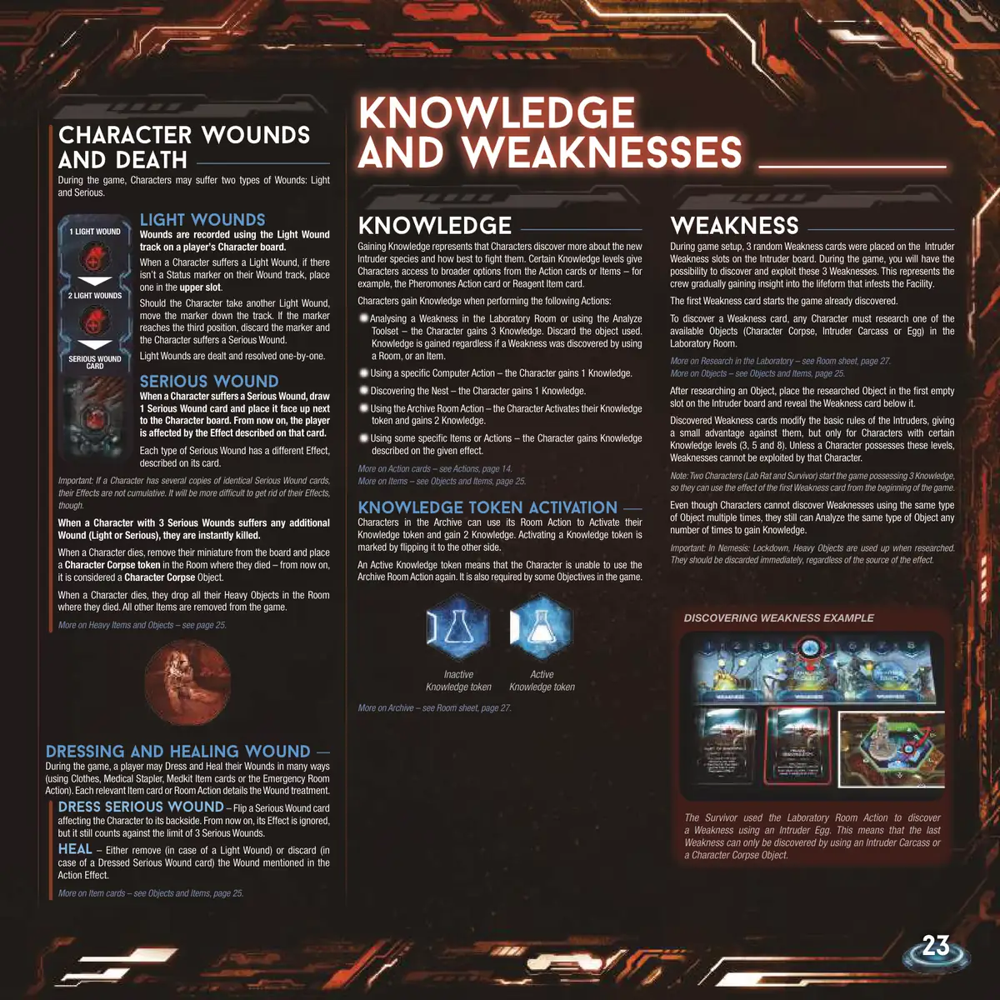
📝 第 23 页 AI 机翻对照（点击展开）
角色创伤
与死亡
在游戏中，角色可能遭受两种类型的创伤：轻伤和重伤。
轻伤
创伤通过玩家角色版图上的轻伤轨道来记录。
当角色遭受轻伤时，如果其创伤轨道上没有状态指示物，则在上方槽位放置一个。
如果角色再次遭受轻伤，将指示物沿轨道向下移动。如果指示物到达第三个位置，则弃置该指示物，角色遭受一次重伤。
轻伤是一次一个地处理和结算的。
重伤
当角色遭受重伤时，抽取1张重伤卡牌，并将其正面朝上放置在角色版图旁边。从现在起，玩家受到该卡牌上描述的效果影响。
每种类型的重伤都有不同的效果，描述在其卡牌上。
重要：如果角色有多张相同类型的重伤卡牌，它们的效果不会叠加。不过，将更难摆脱它们的效果。
当拥有3张重伤卡牌的角色遭受任何额外的创伤（轻伤或重伤）时，他们会立即死亡。
当角色死亡时，将其小模型从版图上移除，并在其死亡的房间中放置一个角色尸体指示物——从现在起，它被视为一个角色尸体物品。
当角色死亡时，他们会将其所有重物遗弃在死亡的房间中。所有其他物品都会被移出游戏。
关于重物和物品的更多信息——参见第25页。
包扎与治疗创伤
在游戏中，玩家可以通过多种方式包扎和治疗其创伤（使用衣物、医用订书机、医疗包物品卡牌或急诊室行动）。相关的每张物品卡牌或房间行动都会详细说明创伤处理方法。
包扎重伤——将影响角色的重伤卡牌翻到背面。从现在起，其效果被忽略，但仍计入3张重伤卡牌的限制。
治疗——移除（轻伤情况下）或弃置（包扎的重伤卡牌情况下）行动效果中提到的创伤。
关于物品卡牌的更多信息——参见物品与物品，第25页。
1 轻伤
重伤
卡牌
2 轻伤
知识
与弱点
知识
获得知识代表角色发现了更多关于新入侵物种的信息以及如何最好地对抗它们。某些知识等级使角色能够从行动卡牌或物品中获得更广泛的选择——例如信息素行动卡牌或试剂物品卡牌。
角色在执行以下行动时获得知识：
在实验室房间分析弱点或使用分析工具组——角色获得3点知识。弃置所使用的物品。
无论弱点是通过使用房间还是物品发现的，都会获得知识。
使用特定的电脑行动——角色获得1点知识。
发现巢穴——角色获得1点知识。
使用档案室行动——角色激活其知识指示物并获得2点知识。
使用某些特定物品或行动——角色获得给定效果上描述的知识。
更多关于行动卡——参见行动，第14页。
更多关于物品——参见物品与装备，第25页。
知识指示物激活
档案室中的角色可以使用其房间行动来激活知识指示物并获得2点知识。激活知识指示物通过将其翻到另一面来标记。
激活的知识指示物意味着角色无法再次使用档案室行动。游戏中某些目标也需要它。
未激活
知识指示物
已激活
知识指示物
更多关于档案室——参见房间卡，第27页。
弱点
在游戏设置期间，3张随机弱点卡被放置在入侵者版图的入侵者弱点槽位上。在游戏过程中，你将有机会发现并利用这3个弱点。这代表了船员逐渐逐渐获得对侵入设施的生物体的洞察力。
第一张弱点卡在游戏开始时就已经被发现。
要发现弱点卡，任何角色必须在实验室房间研究一个可用物品（角色尸体、入侵者尸体或卵）。
更多关于在实验室中研究——参见房间卡，第27页。
更多关于物品——参见物品与装备，第25页。
研究物品后，将研究过的物品放置在入侵者版图上的第一个空槽位，并揭示其下方的弱点卡。
已发现的弱点卡会修改入侵者的基本规则，为拥有特定知识等级（3、5和8）的角色提供小优势。除非角色拥有这些等级，否则弱点无法被该角色利用。
注意：两个角色（实验室老鼠和幸存者）在游戏开始时拥有3点知识，因此他们可以从游戏一开始就使用第一张弱点卡的效果。
尽管角色不能多次使用相同类型的物品来发现弱点，但他们仍然可以分析相同类型的物品任意次数来获得知识。
重要：在《Nemesis: Lockdown》中，重物在被研究时会被消耗。无论效果来源如何，都应立即将其弃置。
发现弱点示例
幸存者使用实验室房间行动，使用入侵者卵发现了一个弱点。这意味着最后一个弱点只能通过使用入侵者尸体或角色尸体物品来发现。
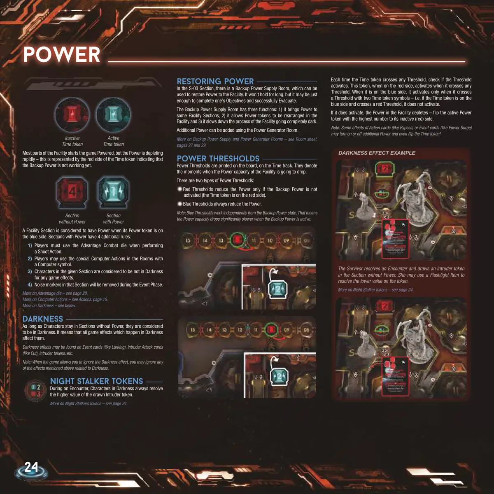
📝 第 24 页 AI 机翻对照（点击展开）
电力
非激活状态
时间指示物
激活状态
时间指示物
设施的大部分区域在游戏开始时是有电力的，但电力正在迅速耗尽——这由时间指示物的红色面表示，表明备用电源尚未启动。
无电力区域
有电力区域
当设施区域的电力指示物处于蓝色面时，该区域被认为是有电力的。有电力的区域有4条额外规则：
1) 玩家执行射击行动时必须使用优势战斗骰子。
- 玩家可以在带有电脑符号的房间中使用特殊电脑行动。
- 该区域内的角色在任何游戏效果下都不被视为处于黑暗中。
- 该区域中的噪音标记将在事件阶段被移除。
关于优势骰子更多信息 – 参见第20页。
关于电脑行动更多信息 – 参见行动，第15页。
关于黑暗更多信息 – 参见下文。
黑暗
只要角色停留在无电力的区域，他们就被视为处于黑暗中。这意味着所有在黑暗中发生的游戏效果都会影响他们。
黑暗效果可能出现在事件卡上（如潜伏者）、入侵者攻击卡上（如切割）、入侵者指示物等。
注意：当游戏允许你忽略黑暗效果时，你可以忽略上述任何与黑暗相关的效果。
夜行者指示物
在遭遇中，处于黑暗中的角色总是解析所抽到的入侵者指示物上的较高数值。
关于夜行者指示物更多信息 – 参见第24页。
恢复电力
在S-03区域，有一个备用电源室，可用于恢复设施的电力。它不会持续很久，但可能足以完成一个人的目标并成功撤离。
备用电源室有三个功能：1）为一些设施区域带来电力，2）允许在设施中重新排列电力指示物，3）减缓设施完全变暗的过程。
可以使用发电机室来增加额外电力。
关于备用电源室和发电机室更多信息 – 参见房间卡，第27页和第29页。
电力阈值
电力阈值印刷在版图的时间轨道上。它们表示设施电力容量将要下降的时刻。
有两种类型的电力阈值：
红色阈值仅在备用电源未激活时（时间指示物处于红色面）才会减少电力。
蓝色阈值总是减少电力。
注意：蓝色阈值的工作独立于备用电源状态。这意味着当备用电源激活时，电力容量的下降速度会显著变慢。
黑暗效果示例
幸存者解析一个遭遇，并在无电力区域抽到一个入侵者指示物。她可以使用手电筒道具来解析指示物上的较低数值。
关于夜袭者指示物的更多信息——参见第24页。
每当时间指示物穿过任何阈值时，检查该阈值是否激活。当该指示物处于红色面时，穿过任何阈值都会激活。当它处于蓝色面时，仅当穿过带有两个时间指示物符号的阈值时才会激活——即，如果时间指示物处于蓝色面并穿过红色阈值，它不会激活。
如果确实激活，设施中的能量会耗尽——将编号最高的激活能量指示物翻转到其非激活（红色）面。
注意：行动卡（如"绕行"）或事件卡（如"能量激增"）的某些效果可能会开启或关闭额外的能量，甚至翻转时间指示物！
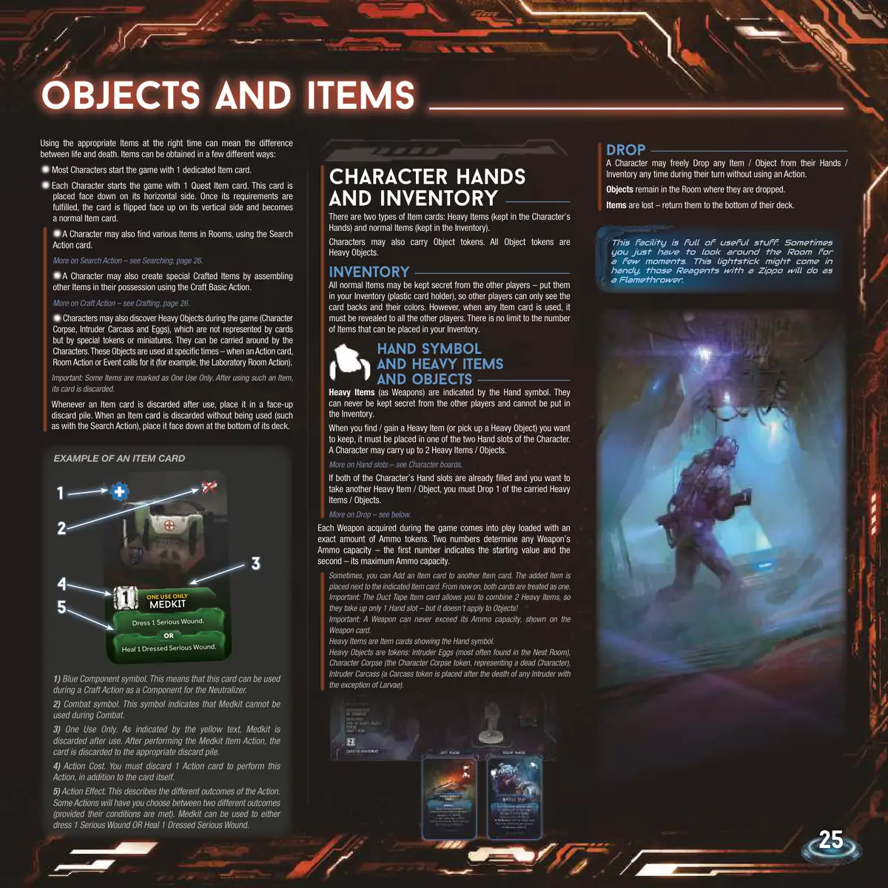
📝 第 25 页 AI 机翻对照（点击展开）
在适当的时候使用合适的道具可能意味着生与死的区别。道具可以通过几种不同的方式获得：
大多数角色开始游戏时拥有1张专属道具卡。
每个角色开始游戏时拥有1张任务道具卡。这张卡牌被水平面朝下放置。一旦其要求被满足，卡牌将被垂直面朝上翻开，并成为一张普通道具卡。
角色也可以使用搜索行动卡在房间中找到各种道具。
更多关于搜索行动——参见搜索，第26页。
角色也可以通过组装他们拥有的其他道具，使用制作基础行动来创建特殊的制作道具。
更多关于制作行动——参见制作，第26页。
角色还可能在游戏过程中发现重物（角色尸体、入侵者尸体和蛋），这些物品不由卡牌表示，而是由特殊的指示物或小模型表示。它们可以被角色携带。这些物品在特定时候使用——当行动卡、房间行动或事件要求时（例如，实验室房间行动）。
重要：一些道具标记为一次性使用。使用此类道具后，其卡牌被弃置。
无论何时道具卡在使用后被弃置，将其放入面朝上的弃牌堆。当道具卡在未使用的情况下被弃置（如使用搜索行动时），将其面朝下放在其牌库底部。
角色手牌
和物品栏
有两种类型的道具卡：重物（保存在角色的手中）和普通道具（保存在物品栏中）。
角色也可以携带物品指示物。所有物品指示物都是重物。
物品栏
所有普通道具可以保密，不让其他玩家看到——将它们放入你的物品栏（塑料卡牌架），这样其他玩家只能看到卡牌背面和它们的颜色。然而，当使用任何道具卡时，必须向所有其他玩家展示。放入物品栏的道具数量没有限制。
手部符号
和重物
和物品
重物（如武器）由手部符号表示。它们永远不能对其他玩家保密，也不能放入物品栏。
当你找到/获得一张重物（或拿起一个重物）并想要保留时，必须将其放置在角色的两个手部槽位之一。
一个角色最多可以携带2个重物/物品。
更多关于手部槽位——参见角色板。
如果角色的两个手部槽位都已填满，而你想要再拿一个重物/物品，你必须丢弃一个携带的重物/物品。
更多关于丢弃——参见下文。
游戏中获得的每把武器进入游戏时都带有精确数量的弹药指示物。两个数字决定了任何武器的
弹药容量 – 第一个数字表示起始值，第二个数字表示其最大弹药容量。
有时，你可以将一张物品卡添加到另一张物品卡上。被添加的物品卡放置在指定物品卡旁边。从现在起，两张卡被视为一张。
重要：胶带物品卡允许你组合2个重型物品，使它们只占用1个手牌位 – 但这不适用于物体！
重要：武器永远不会超过其武器卡上显示的弹药容量。
重型物品是显示手牌符号的物品卡。
重型物体是指示物：入侵者卵（最常在巢穴房间中发现）、角色尸体（代表死亡角色的角色尸体指示物）、入侵者尸体（除幼虫外，任何入侵者死亡后都会放置一个尸体指示物）。
物品卡示例
仅限一次使用
医疗包
包扎1个重伤。
或者
治疗1个已包扎的重伤。
- 蓝色组件符号。这意味着这张卡可以在制作行动中作为中和器的组件使用。
- 战斗符号。这个符号表示医疗包不能在战斗中使用。
- 仅限一次使用。如黄色文本所示，医疗包在使用后会被弃置。执行医疗包物品行动后，将卡牌弃置到相应的弃牌堆。
- 行动费用。除了卡牌本身，你必须弃置1张行动卡才能执行此行动。
- 行动效果。这描述了行动的不同结果。有些行动会让你在两种不同的结果之间选择（前提是满足其条件）。医疗包可用于包扎1个重伤或治疗1个已包扎的重伤。
物体和物品
丢弃
角色可以在自己的回合期间随时自由丢弃任何手牌/物品栏中的物品/物体，而不需要使用行动。
物体停留在被丢弃的房间中。
物品会丢失 – 将它们返回到其牌库底部。
这个设施里装满了有用的东西。有时
你只需要在房间里四处看看
一会儿。这个荧光棒可能会派上用场，
那些带有打火机的试剂可以充当
喷火器。
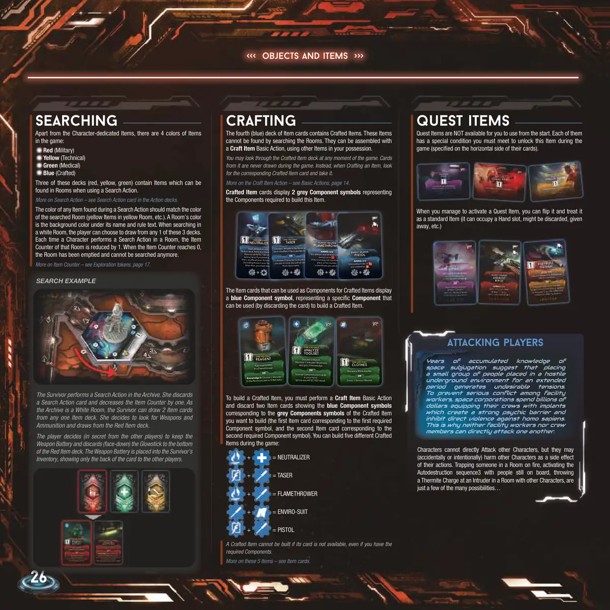
📝 第 26 页 AI 机翻对照（点击展开）
制作
第四张（蓝色）物品卡牌堆包含制作物品。这些物品无法通过搜索房间找到。它们可以使用"制作物品"基础行动，使用你拥有的其他物品来组装。
你可以在游戏任何时候查看制作物品牌堆。游戏期间不会从中抽取卡牌。相反，当制作物品时，寻找对应制作物品卡牌并获取它。
更多关于制作物品行动的信息——参见基础行动，第14页。
制作物品卡牌显示2个灰色组件符号，代表制作此物品所需的组件。
仅限使用一次
中和剂
扫描你行动牌堆、手牌和弃牌堆中的所有卡牌。
移除所有感染卡牌（如果你有的话，还要移除一只幼虫）。
然后，洗混你所有的行动卡牌（包括你手中的牌）。
之后，你必须跳过。
仅限使用一次
电击枪
选择你所在房间中的1个入侵者。它受到1点伤害并撤退。
或者
你所在房间中的1个选定角色必须弃掉其手牌中的所有卡牌。
经典武器
火焰喷射器
弹药：4/4
你总是至少造成1点伤害，除非掷出
。
如果战斗掷骰结果是
，在你所在的房间放置一个火焰标记。
能量武器
手枪
弹药：3/3
未修改的
结果被视为
。
可作为制作物品组件使用的物品卡牌显示一个蓝色组件符号，代表一个特定组件（通过弃掉该卡牌）可用于制作制作物品。
仅限使用一次
试剂
为火焰喷射器完全装填弹药。
或者
知识5：选择你所在房间中的1个入侵者。它撤退。
仅限使用一次
分析工具组
弃掉1个物品。
发现1个入侵者弱点并获得3点知识。
或者
扫描你手牌中的所有污染卡牌。
忽略任何感染结果。
仅限使用一次
防护服
弃掉1个粘液标记。
或者
处理1个严重伤口。
要制作制作物品，你必须执行"制作物品"基础行动，并弃掉两张显示蓝色组件符号的物品卡牌，这些符号对应你想制作的制作物品的灰色组件符号（第一张物品卡牌对应第一个所需组件符号，第二张物品卡牌对应第二个所需组件符号）。你可以在游戏期间制作五种不同的制作物品：
+
= 中和剂
+
= 电击枪
+
= 火焰喷射器
+
= 环境防护服
+
= 手枪
如果制作物品的卡牌不可用，即使你有所需组件，也无法制作该物品。
关于这5种物品的更多信息——参见物品卡牌。
搜索示例
幸存者在档案馆执行搜索行动。她弃掉一张搜索行动卡牌并将物品计数器减一。由于档案馆是白色房间，幸存者可以从任意一个物品牌堆抽取2张物品卡牌。她决定寻找武器，
弹药和从红色物品牌库摸牌。
玩家决定（秘密地，不让其他玩家知道）保留武器电池，并将荧光棒（面朝下）弃置到红色物品牌库的底部。武器电池被放入幸存者的背包中，只向其他玩家展示卡牌的背面。
搜索
除了专属角色的物品外，游戏中还有4种颜色的物品：
红色（军事）
黄色（技术）
绿色（医疗）
蓝色（手工）
其中三个牌库（红色、黄色、绿色）包含在使用搜索行动时可以在房间中找到的物品。
更多关于搜索行动——请参阅行动牌库中的搜索行动卡。
在搜索行动中找到的任何物品的颜色应与被搜索房间的颜色相匹配（黄色房间中的黄色物品等）。房间的颜色是其名称和规则文本下方的背景颜色。在白色房间中搜索时，玩家可以选择从这3个牌库中的任意1个摸牌。
每当角色在房间中执行搜索行动时，该房间的物品计数器减少1。当物品计数器达到0时，该房间已被清空，无法再进行搜索。
更多关于物品计数器——请参阅探索指示物，第17页。
任务物品
任务物品在游戏开始时不可供你使用。每个任务物品都有一个特殊条件，你必须在游戏中满足该条件才能解锁此物品（指定在其卡牌的水平侧面上）。
当你成功激活一个任务物品时，你可以将其翻转并视为一个标准物品（它可以占用一个手牌位，可能被弃置、赠送等）。
<<< 物体和物品 >>>
攻击玩家
多年积累的太空征服知识表明，将一小群人放置在敌对的地下环境中很长一段时间会产生不良的紧张关系。
为防止设施工作人员之间发生严重冲突，太空公司花费数十亿美元为船员配备植入物，这些植入物能形成强大的心理屏障，并抑制对智人的直接暴力行为。
这就是为什么设施工作人员和船员都不能直接攻击彼此的原因。
角色不能直接攻击其他角色，但他们可能会（意外或故意）在行动的副作用中伤害其他角色。将某人困在着火的房间里，在还有人留在船上时激活自毁序列3，向有其他角色的房间里的入侵者投掷铝热剂，这只是众多可能性中的几个...
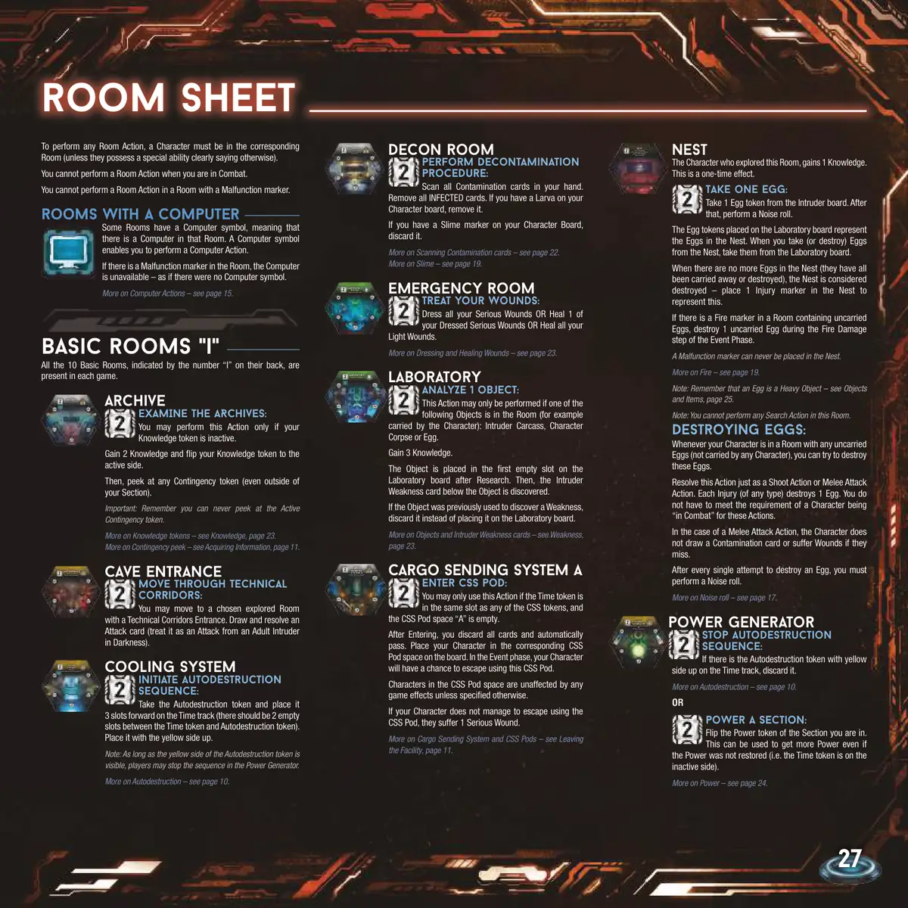
📝 第 27 页 AI 机翻对照（点击展开）
要执行任何房间行动，角色必须在相应的房间内（除非他们拥有明确说明可以例外的特殊能力）。
当你处于战斗中时，不能执行房间行动。
在有故障标记的房间中，不能执行房间行动。
有电脑的房间
一些房间有电脑符号，表示该房间有一台电脑。电脑符号使你能够执行电脑行动。
如果房间内有故障标记，则电脑不可用——就好像没有电脑符号一样。
更多关于电脑行动的信息——参见第15页。
基础房间"I"
所有10个基础房间，其背面标有数字"I"，在每局游戏中都会出现。
档案馆
检查档案馆
档案馆
检查档案馆：
只有当你的知识指示物处于非激活状态时，才能执行此行动。
获得2点知识并将你的知识指示物翻到激活面。
然后，偷看任何应急指示物（即使在你区域之外）。
重要：记住你永远不能偷看激活的应急指示物。
更多关于知识指示物的信息——参见知识，第23页。
更多关于偷看应急指示物的信息——参见获取信息，第11页。
洞穴入口
穿过技术走廊
洞穴入口
穿过技术走廊：
你可以移动到所选的、有技术走廊入口的已探索房间。抽取并结算一张攻击牌（将其视为来自黑暗中的成年入侵者的攻击）。
冷却系统
启动自毁序列
冷却系统
启动自毁序列：
拿取自毁指示物并将其放在时间轨道上前移3格（时间指示物和自毁指示物之间应有2个空格）。
将其黄色面朝上放置。
注意：只要自毁指示物的黄色面可见，玩家就可以在发电机室停止该序列。
更多关于自毁的信息——参见第10页。
净化室
执行净化程序
净化室
执行净化程序：
扫描你手牌中的所有污染卡。
移除所有感染卡。如果你的角色版上有幼虫，则移除它。
如果你的角色版上有粘液标记，则弃掉它。
更多关于扫描污染卡的信息——参见第22页。
更多关于粘液的信息——参见第19页。
急救室
治疗你的伤口
急救室
治疗你的伤口：
包扎你所有的重伤，或治疗1个已包扎的重伤，或治疗你所有的轻伤。
更多关于包扎和治疗伤口的信息——参见第23页。
实验室
分析1个物品
实验室
分析1个物品：
只有当以下物品之一在房间内时（例如由角色携带），才能执行此行动：入侵者尸体、角色尸体或蛋。
获得3点知识。
该物品被放置在角色版上第一个空位。
研究后的实验室板块。然后，发现目标下方的入侵者弱点卡。
如果目标先前曾被用来发现弱点，则将其弃置，而不是放置在实验室板块上。
关于目标和入侵者弱点卡更多信息——见弱点，第23页。
货物
发送系统 A
进入CSS舱 A
货物发送系统 A
进入CSS舱：
只有当时值指示物与任何CSS指示物位于同一槽位，且CSS舱区域"A"为空时，你才能使用此行动。
进入后，你弃置所有牌并自动跳过。将你的角色放置在版图上对应的CSS舱区域。在事件阶段，你的角色将有机会使用此CSS舱逃脱。
CSS舱区域中的角色不受任何游戏效果影响，除非另有说明。
如果你的角色未能使用CSS舱逃脱，他们将受到1点重伤。
关于货物发送系统和CSS舱更多信息——见离开设施，第11页。
巢穴
探索此房间的角色，获得1点知识。
取一个蛋
巢穴
探索此房间的角色，获得1点知识。
这是一次性效果。
取一个蛋：
从入侵者板块上取1个蛋指示物。之后，执行一次噪音投掷。
放置在实验室板块上的蛋指示物代表巢穴中的蛋。当你从巢穴中取走（或摧毁）蛋时，从实验室板块上取走它们。
当巢穴中不再有蛋（它们全部被带走或摧毁）时，巢穴被视为被摧毁——在巢穴中放置1个伤害标记来表示这一点。
如果包含未带走蛋的房间中有火灾标记，在事件阶段的火灾伤害步骤中摧毁1个未带走的蛋。
malfunction 标记永远不能放置在巢穴中。
关于火灾更多信息——见第19页。
注意：记住蛋是重物——见目标和物品，第25页。
注意：你不能在此房间执行任何搜索行动。
摧毁蛋：
每当你的角色在包含任何未带走蛋（未被任何角色携带）的房间中时，你可以尝试摧毁这些蛋。
解决此行动就像执行射击行动或近战攻击行动。每种伤害（任何类型）摧毁1个蛋。对于这些行动，你不必满足角色"处于战斗中"的要求。
在近战攻击行动的情况下，如果角色未命中，他们不会抽取污染牌或受到伤害。
每次尝试摧毁蛋后，你必须执行一次噪音投掷。
关于噪音投掷更多信息——见第17页。
动力
发电机
停止自毁序列
或
为区域供电
动力发电机
停止自毁序列：
如果时间轨道上有黄色面朝上的自毁指示物，则弃置它。
关于自毁更多信息——见第10页。
或
为区域供电：
翻转你所在区域的能量指示物。
即使能量未被恢复（即时间指示物处于非激活面），这也可以用来获得更多能量。
关于能量更多信息 – 参见第24页。
房间表
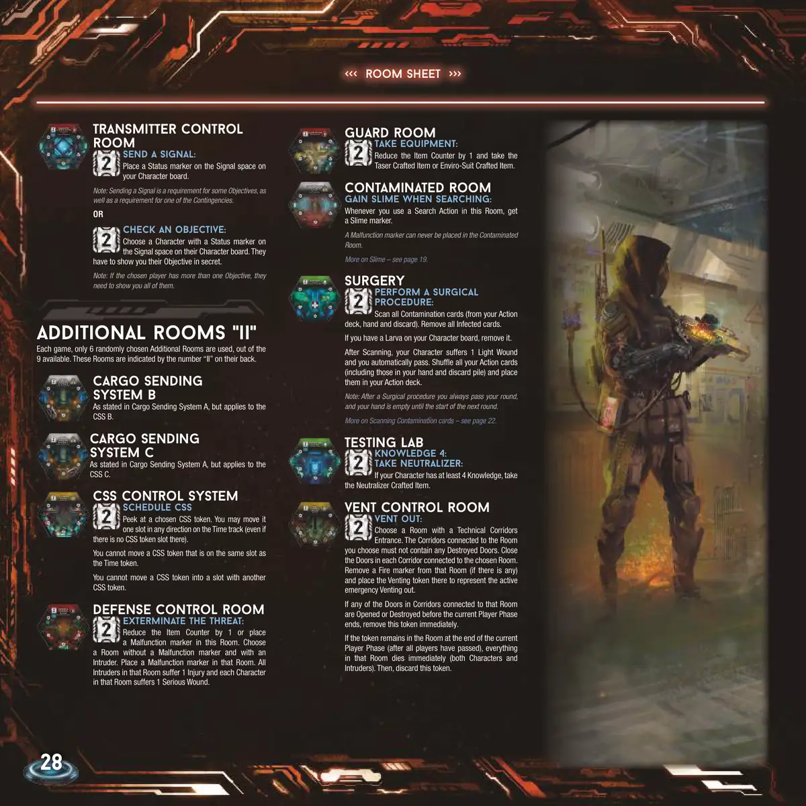
📝 第 28 页 AI 机翻对照（点击展开）
<<< 房间表 >>>
发射器
控制室
发送信号
或者
检查目标
发射器控制室
发送信号：
在你的角色版图上信号空间放置一个状态标记。
注意：发送信号是某些目标的必要条件，也是某些意外事件的必要条件。
或者
检查目标：
选择一个在其角色版图信号空间上有状态标记的角色。他们必须秘密向你展示他们的目标。
注意：如果所选玩家有多个目标，他们需要向你展示所有目标。
额外房间 "II"
每局游戏中，只使用从9个可用房间中随机选出的6个额外房间。这些房间背面标有"II"字样。
货物
发送系统 B
进入 CSS 舱 B
货物发送系统 B
如货物发送系统 A所述，但适用于 CSS B。
货物
发送系统 C
进入 CSS 舱 C
货物发送系统 C
如货物发送系统 A所述，但适用于 CSS C。
CSS 控制室
调度 CSS
CSS 控制系统
调度 CSS：
查看一个选定的 CSS 标记。你可以在时间轨道上将其向任意方向移动一格（即使那里没有 CSS 标记槽位）。
你不能移动与时间标记在同一槽位的 CSS 标记。
你不能将 CSS 标记移动到有另一个 CSS 标记的槽位。
防御控制室
消灭威胁
防御控制室
消灭威胁：
将物品计数器减 1 或在此房间放置一个故障标记。选择一个没有故障标记且有入侵者的房间。在该房间放置一个故障标记。该房间中的所有入侵者遭受 1 点伤害，该房间中的每个角色遭受 1 点重伤。
警卫室
获取装备
警卫室
获取装备：
将物品计数器减 1 并获取电击器手工艺品或环境适应服手工艺品。
污染室
搜索时获得粘液
污染室
搜索时获得粘液：
每当你在该房间使用搜索行动时，获得一个粘液标记。
故障标记永远不能放置在污染室中。
关于粘液的更多信息——参见第 19 页。
手术室
执行手术程序
手术室
执行手术程序：
扫描所有污染卡（从你的行动牌库、手牌和弃牌堆中）。移除所有感染卡。如果你的角色版图上有幼虫，将其移除。扫描后，你的角色遭受 1 点轻伤，你自动通过。洗混你所有的行动牌（包括你手牌和弃牌堆中的牌）并将它们放入你的行动牌库。
注意：手术后你总是跳过你的回合，直到下一回合开始前你的手牌都是空的。
关于扫描污染卡的更多信息——参见第 22 页。
测试实验室
知识 4：
获取中和剂
测试实验室
知识 4：
获取中和剂：
如果你的角色至少有4点知识，获得中和器（Neutralizer）手工艺品。
通风口
控制室
通风口出
通风口出：
选择一个有技术走廊入口（Technical Corridors Entrance）的房间。与你选择的房间相连的走廊必须不包含任何被摧毁的门。关闭与你选择的房间相连的每个走廊中的门。从该房间移除一个火焰标记（如果有），并将通风标记（Venting token）放置在那里，表示正在进行的紧急通风口出行动。
如果在当前玩家回合结束前，任何与该房间相连的走廊中的门被打开或被摧毁，立即移除此标记。
如果标记在该房间中保留到当前玩家回合结束（所有玩家都已弃权后），该房间内的所有东西立即死亡（包括角色和入侵者）。然后，弃置此标记。
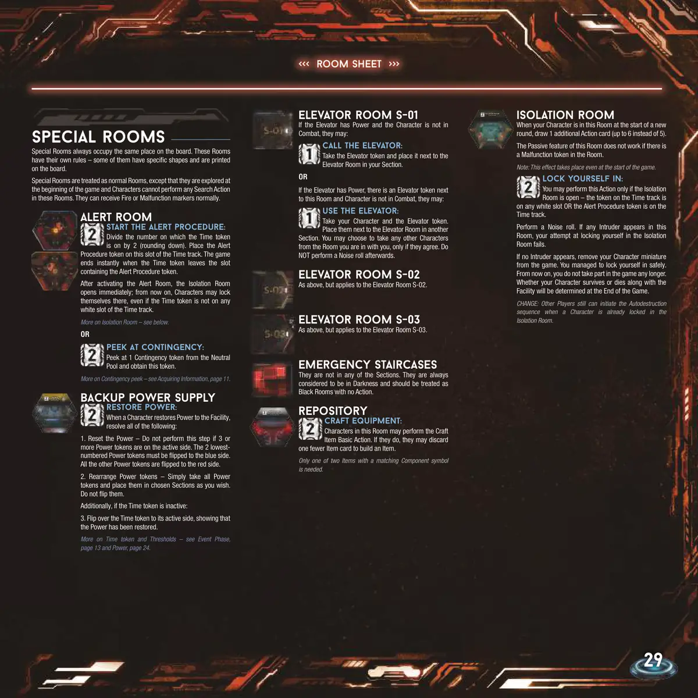
📝 第 29 页 AI 机翻对照（点击展开）
特殊房间
特殊房间在版图上总是占据相同的位置。这些房间有自己的规则——其中一些具有特定形状并印在版图上。
特殊房间被视为普通房间，只是它们在游戏开始时就被探索，角色不能在这些房间执行任何搜索行动。它们可以正常接收火灾或故障标记。
警报房间
启动警报程序：
将时间标记所在数字除以2（向下取整）。将警报程序标记放在时间轨道的这个槽位上。当时间标记离开包含警报程序标记的槽位时，游戏立即结束。
激活警报房间后，隔离房间立即开放；从现在起，角色可以把自己锁在里面，即使时间标记不在时间轨道的任何白色槽位上。
关于隔离房间的更多信息——见下文。
或者
查看应急方案：
从中立池查看1个应急方案标记并获得该标记。
关于查看应急方案的更多信息——见"获取信息"，第11页。
备用电源
恢复电力
备用电源
恢复电力：
当角色为设施恢复电力时，执行以下所有步骤：
- 重置电力——如果3个或更多电力标记处于激活面，则不执行此步骤。编号最小的2个电力标记必须翻到蓝色面。所有其他电力标记翻到红色面。
- 重新排列电力标记——只需拿起所有电力标记并按你的意愿放在选定的区域中。不要翻转它们。
此外，如果时间标记处于非激活状态：
3. 将时间标记翻到其激活面，表示电力已恢复。
关于时间标记和阈值的更多信息——见"事件阶段"，第13页和"电力"，第24页。
电梯房间 S-01
如果电梯有电力且角色不在战斗中，他们可以：
呼叫电梯：
拿起电梯标记并将其放在你区域中的电梯房间旁边。
或者
如果电梯有电力，这个房间旁边有电梯标记，且角色不在战斗中，他们可以：
使用电梯：
拿起你的角色和电梯标记。
将它们放在另一个区域中的电梯房间旁边。你可以选择带你所在房间中的任何其他角色一起走，但前提是他们同意。之后不要进行噪音检定。
电梯房间 S-02
如上所述，但适用于电梯房间 S-02。
电梯房间 S-03
如上所述，但适用于电梯房间 S-03。
紧急楼梯
它们不在任何区域中。它们总是被视为处于黑暗中，应视为没有行动的黑色房间。
仓库
设施工人从这里开始
制作装备
仓库
制作装备：
此房间的角色可以执行制作
基础行动。如果他们这样做，他们可以少弃置一张物品卡来建造一个物品。
两个具有相同组件符号的物品中只需要一个。
<<< 房间表 >>>
隔离室
将自己锁在隔离室
隔离室
当你的角色在新回合开始时位于此房间时，额外抽1张行动卡（最多6张而不是5张）。
如果此房间有故障指示物，此房间的被动特性不起作用。
注意：此效果甚至在游戏开始时也会发生。
将自己锁在：
只有当隔离室开放时——时间轨道上的指示物位于任何白色槽位，或警报程序指示物位于时间轨道上——你才能执行此行动。
进行一次噪音检定。如果有任何入侵者出现在此房间，你试图将自己锁在隔离室的尝试失败。
如果没有入侵者出现，将你的角色小模型从游戏中移除。你成功将自己安全锁在隔离室中。
从此以后，你不再参与游戏。
无论你的角色是生存还是与设施一同死亡，都将在游戏结束时确定。
变更：当角色已经锁在隔离室中时，其他玩家仍然可以启动自毁序列。
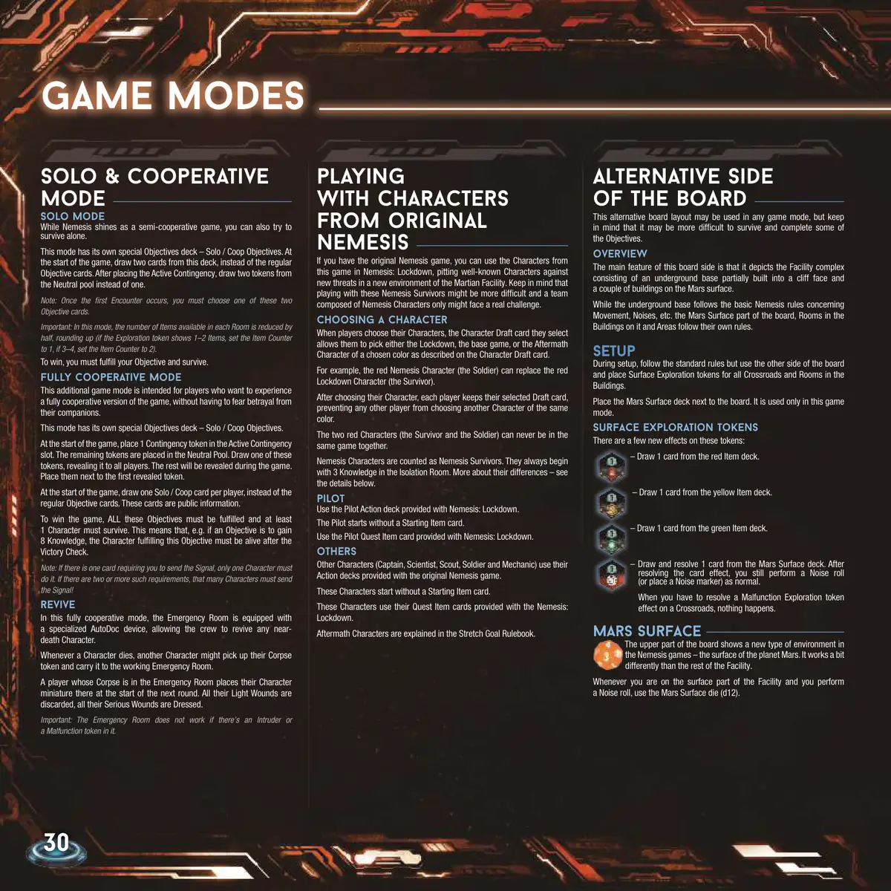
📝 第 30 页 AI 机翻对照（点击展开）
游戏模式
单人与合作模式
单人模式
虽然《Nemesis》作为半合作游戏表现出色，你也可以尝试独自求生。
这个模式有其专属的目标牌组——单人/合作目标牌组。游戏开始时，从此牌组抽取两张牌，而不是常规的目标牌。放置主动应急牌后，从中立池抽取两个指示物，而不是一个。
注意：一旦发生第一次遭遇，你必须选择这两张目标牌中的一张。
重要：在此模式下，每个房间内可用物品的数量减半（向上取整）（如果探索指示物显示1-2个物品，将物品计数器设为1；如果显示3-4个物品，将物品计数器设为2）。
要获胜，你必须完成你的目标并存活。
完全合作模式
这个额外的游戏模式适合那些想要体验完全合作版本的玩家，不必担心被同伴背叛。
这个模式有其专属的目标牌组——单人/合作目标牌组。
游戏开始时，在主动应急槽位放置1个应急指示物。其余指示物放入中立池。从中抽取一个指示物，向所有玩家展示。其余指示物将在游戏过程中揭示。将它们放在第一个被揭示的指示物旁边。
游戏开始时，每位玩家抽取一张单人/合作牌，而不是常规的目标牌。这些牌是公开信息。
要赢得游戏，必须完成所有这些目标，并且至少有1个角色存活。这意味着，例如，如果一个目标是获得8点知识，完成该目标的角色必须在胜利检查后仍然存活。
注意：如果有一张牌要求你发送信号，只需一个角色完成即可。如果有两个或更多这样的要求，那么必须有相应数量的角色发送信号！
复活
在这个完全合作模式中，急救室配备了专门的AutoDoc设备，允许船员复活任何濒临死亡的角色。
每当一个角色死亡时，另一个角色可以拾取他们的尸体指示物并将其带到可用的急救室。
尸体在急救室的玩家在下一回合开始时将其角色小模型放在那里。他们所有的轻伤被弃置，所有的重伤被包扎。
重要：如果急救室内有入侵者或故障指示物，急救室将无法工作。
使用原版
Nemesis
中的角色
如果你拥有原版《Nemesis》游戏，你可以在《Nemesis: Lockdown》中使用这款游戏中的角色，让知名角色在火星设施的新环境中面对新的威胁。请注意，使用这些《Nemesis》幸存者可能会更具挑战性，团队
完全由《Nemesis》角色组成的队伍可能会面临真正的挑战。
选择角色
当玩家选择他们的角色时，他们选择的角色抽选卡允许他们根据角色抽选卡上的描述，选择封锁模式、基础游戏或余波模式中某个选定颜色的角色。
例如，红色《Nemesis》角色（士兵）可以替换红色封锁模式角色（幸存者）。
选择角色后，每位玩家保留他们选择的抽选卡，防止其他玩家选择相同颜色的其他角色。
两个红色角色（幸存者和士兵）永远不能在同一局游戏中一起出现。
《Nemesis》角色被计为《Nemesis》幸存者。他们总是以隔离室中的3点知识开始。关于他们的差异更多内容——详见下文。
飞行员
使用随《Nemesis: Lockdown》提供的飞行员行动牌组。
飞行员开始时没有起始物品卡。
使用随《Nemesis: Lockdown》提供的飞行员任务物品卡。
其他角色
其他角色（船长、科学家、侦察兵、士兵和机械师）使用随原始《Nemesis》游戏提供的他们的行动牌组。
这些角色开始时没有起始物品卡。
这些角色使用随《Nemesis: Lockdown》提供的他们的任务物品卡。
余波角色在Stretch Goal规则书中说明。
版图另一面
这个替代版图布局可以在任何游戏模式中使用，但请注意，生存和完成某些目标可能会更加困难。
概览
这个版图面的主要特点是它描绘了设施综合体，包括部分建在悬崖面上的地下基地和火星表面上的几栋建筑。
虽然地下基地遵循关于移动、噪音等的基本《Nemesis》规则，但版图的火星表面部分、其上的建筑中的房间和区域遵循它们自己的规则。
设置
在设置期间，遵循标准规则但使用版图的另一面，并为所有十字路口和建筑中的房间放置表面探索指示物。
将火星表面牌组放在版图旁边。它仅在此游戏模式中使用。
表面探索指示物
这些指示物上有一些新效果：
- 从红色物品牌组摸1张牌。
- 从黄色物品牌组摸1张牌。
- 从绿色物品牌组摸1张牌。
- 从火星表面牌组摸1张牌并结算其效果。结算卡牌效果后，你仍然正常进行一次噪音检定（或放置一个噪音标记）。
当你需要在十字路口上结算故障探索指示物效果时，什么都不会发生。
火星表面
版图的上部展示了《Nemesis》游戏中的一种新类型环境——火星行星表面。它的运作方式与设施的其他部分有所不同。
当你位于设施的表面部分并进行噪音检定时，使用火星表面骰子（d12）。
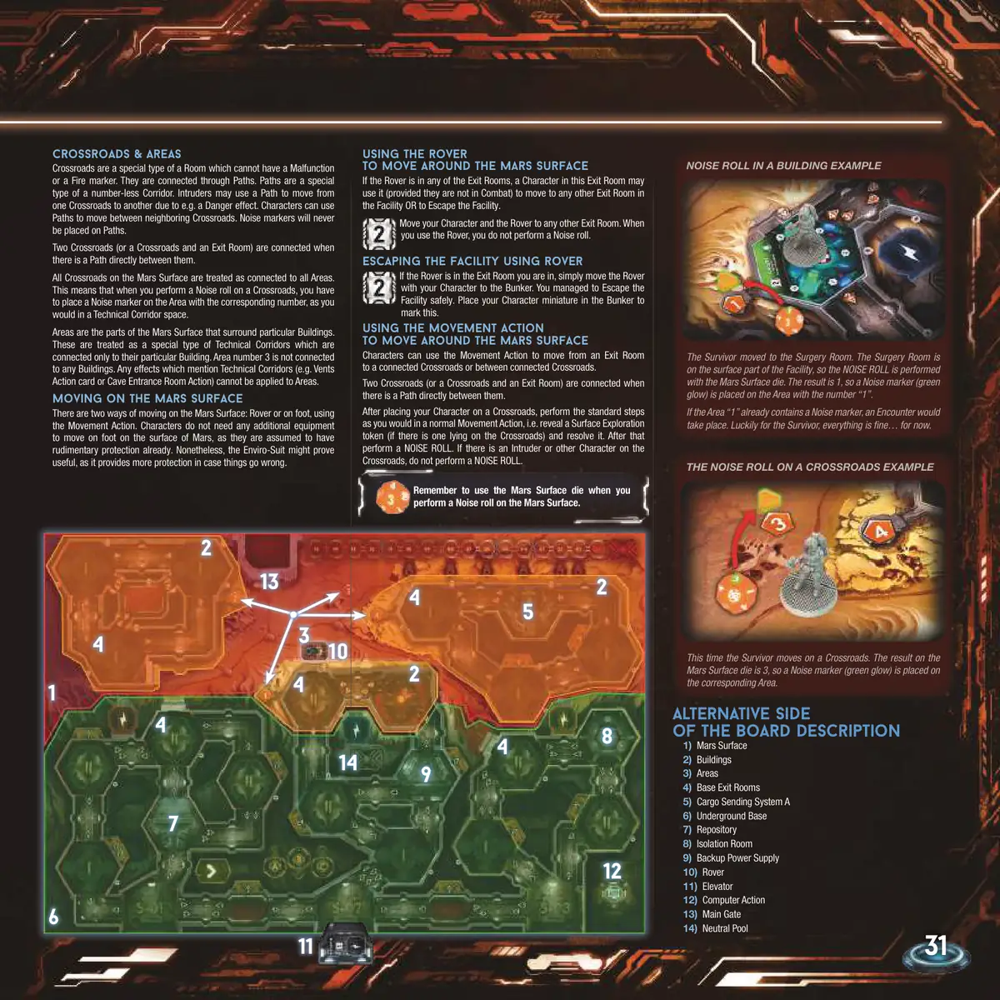
📝 第 31 页 AI 机翻对照（点击展开）
岔路与区域
岔路是一种特殊的房间，不能有故障或火灾标记。它们通过路径连接。路径是一种无编号的特殊走廊。入侵者可能因为危险效果等原因使用路径从一个岔路移动到另一个岔路。角色可以使用路径在相邻的岔路之间移动。噪声标记永远不会被放置在路径上。
当两个岔路（或一个岔路与一个出口房间）之间有直接路径时，它们就是相连的。
火星表面上的所有岔路都被视为与所有区域相连。这意味着当你在岔路上进行噪声投掷时，你必须将噪声标记放置在相应编号的区域上，就像在技术走廊格中一样。
区域是环绕特定建筑物的火星表面部分。它们被视为一种特殊类型的技术走廊，仅连接到其特定的建筑物。区域3不连接到任何建筑物。任何提及技术走廊的效果（例如通风口行动卡或洞穴入口房间行动）都不能应用于区域。
在火星表面移动
在火星表面有两种移动方式：使用探测车或步行，使用移动行动。角色不需要任何额外设备就能在火星表面步行，因为他们被认为已经拥有基本的防护。尽管如此，环境防护服可能会证明有用，因为在出现问题时它能提供更多保护。
版图另一侧描述
1) 火星表面
2) 建筑物
3) 区域
4) 基地出口房间
5) 货物发送系统A
6) 地下基地
7) 仓库
8) 隔离室
9) 备用电源
10) 探测车
11) 电梯
12) 计算机行动
13) 主门
14) 中立池
使用探测车在火星表面移动
如果探测车在任何出口房间中，该出口房间中的角色可以使用它（前提是他们不在战斗中）移动到设施中的任何其他出口房间或逃离设施。
将你的角色和探测车移动到任何其他出口房间。当你使用探测车时，你不进行噪声投掷。
使用探测车逃离设施
如果探测车在你所在的出口房间中，只需将探测车与你的角色一起移动到掩体。你成功安全地逃离了设施。将你的角色小人放置在掩体上以标记这一点。
使用移动行动在火星表面移动
角色可以使用移动行动从出口房间移动到相连的岔路或在不同相连的岔路之间移动。
当两个岔路（或一个岔路与一个出口房间）之间有直接路径时，它们就是相连的。
将你的角色放置在十字路口后，执行常规移动行动的标准步骤，即揭示一个地表探索指示物（如果十字路口上有一个）并解决它。之后执行一次噪音投掷。如果十字路口上有入侵者或其他角色，则不要执行噪音投掷。
记住，在火星表面执行噪音投掷时，要使用火星表面骰子。
建筑物中的噪音投掷示例
幸存者移动到手术室。手术室位于设施的表面部分，因此使用火星表面骰子执行噪音投掷。结果是1，因此一个噪音标记（绿色光晕）被放置在标有数字"1"的区域。
如果区域"1"已经包含一个噪音标记，将会发生遭遇战。对幸存者来说幸运的是，一切正常……至少现在是这样。
十字路口的噪音投掷示例
这次幸存者移动到一个十字路口。火星表面骰子的结果是3，因此一个噪音标记（绿色光晕）被放置在相应的区域。
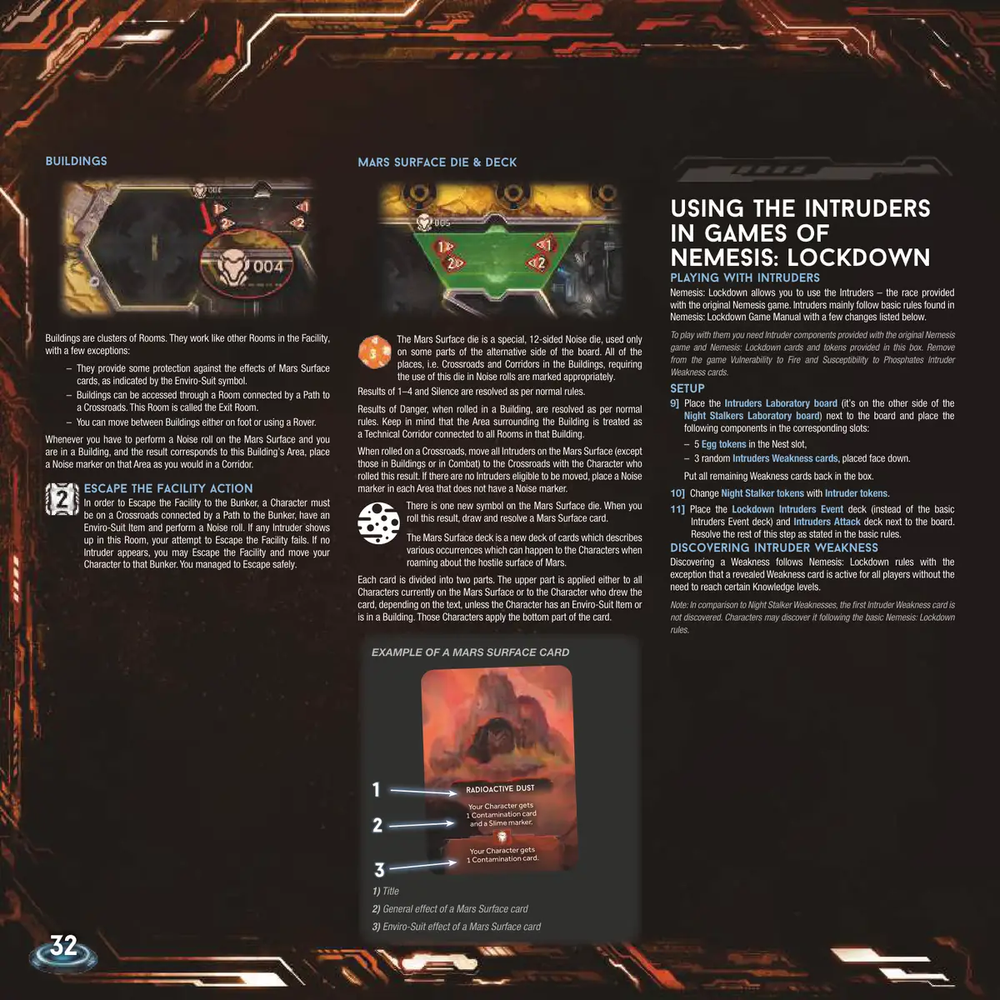
📝 第 32 页 AI 机翻对照（点击展开）
使用入侵者
在 NEMEsis: LoCKDoWN 游戏中
使用入侵者游玩
Nemesis: Lockdown 允许你使用入侵者——即原版 Nemesis 游戏中提供的种族。入侵者主要遵循 Nemesis: Lockdown 游戏手册中的基本规则，但有以下几处变化。
要使用他们，你需要原版 Nemesis 游戏提供的外星入侵者组件，以及本盒中提供的 Nemesis: Lockdown 卡牌和指示物。从游戏中移除"易燃性"和"易受磷酸盐影响"的外星入侵者弱点卡牌。
设置
9] 将外星入侵者实验室版图（在夜行者实验室版图的另一面）放在版图旁边，并将以下组件放入相应的槽位中：
- 5个卵指示物放入巢穴槽位，
- 3张随机的外星入侵者弱点卡牌，面朝下放置。
将剩余的所有弱点卡牌放回盒中。
10] 将夜行者指示物替换为外星入侵者指示物。
11] 将封锁入侵者事件牌组（而非基础入侵者事件牌组）和入侵者攻击牌组放在版图旁边。
本步骤的其余部分按照基础规则所述执行。
发现入侵者弱点
发现弱点遵循 Nemesis: Lockdown 规则，但例外情况是，揭示的弱点卡牌对所有玩家都生效，无需达到特定的知识等级。
注意：与夜行者弱点相比，第一张外星入侵者弱点卡牌不会被发现。角色可以遵循基础 Nemesis: Lockdown 规则来发现它。
火星表面骰子与牌组
火星表面骰子是一个特殊的12面噪音骰子，仅用于版图替代面的某些部分。所有需要使用此骰子进行噪音检定的地点，即建筑物中的十字路口和走廊，都已相应标记。
1-4和静音的结果按照正常规则处理。
危险的结果，如果在建筑物中掷出，按照正常规则处理。请记住，建筑物周围的区域被视为连接到该建筑物所有房间的技术走廊。
在十字路口上掷出时，将所有火星表面上的入侵者（不在建筑物内或不在战斗中的）移动到掷出此结果的角色所在的十字路口。如果没有符合条件可移动的入侵者，则在每个没有噪音指示物的区域放置一个噪音指示物。
火星表面骰子上有一个新的符号。当你掷出此结果时，抽取并执行一张火星表面卡牌。
火星表面牌组是一个新的卡牌牌组，描述了角色在火星敌对表面漫游时可能发生的各种事件。
每张卡牌分为两部分。上半部分适用于当前在火星表面的所有角色，或适用于抽取该卡牌的角色。
卡牌，取决于文本内容，除非角色拥有环境防护服道具或在建筑物内。这些角色应用卡牌的底部部分。
火星地表卡牌示例
放射性尘埃
你的角色获得
1张污染卡牌
和一个黏液指示物。
你的角色获得
1张污染卡牌。
1) 标题
- 火星地表卡牌的通用效果
- 火星地表卡牌的环境防护服效果
建筑物
建筑物是房间的集群。它们像设施中的其他房间一样工作，但有几点例外：
– 它们提供对火星地表卡牌效果的一些保护，如环境防护服符号所示。
– 建筑物可以通过与十字路口通过路径相连的房间进入。这个房间被称为出口房间。
– 你可以步行或使用漫游车在建筑物之间移动。
每当你在火星地表上需要进行噪音检定时，如果你在建筑物内，且结果对应于该建筑物的区域，则像在走廊中一样在该区域放置一个噪音指示物。
逃离设施行动
为了逃离设施到掩体，角色必须位于通过路径与掩体相连的十字路口上，拥有环境防护服道具并进行噪音检定。如果任何入侵者出现在这个房间，你逃离设施的尝试失败。如果没有入侵者出现，你可以逃离设施并将你的角色移动到那个掩体。你成功安全逃离。